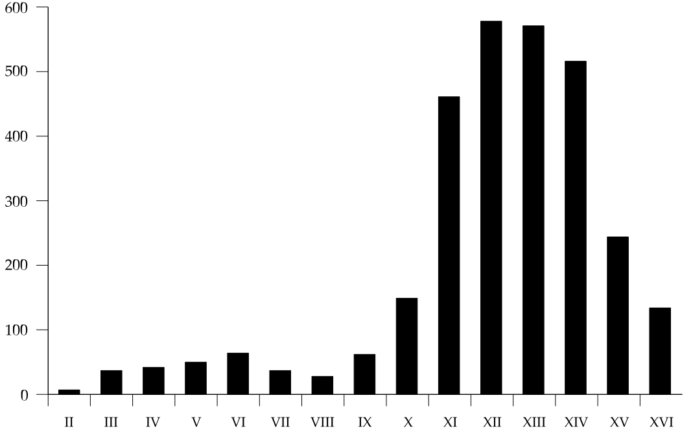

The case for Byzantine priority
There has been no change in people’s opinions of the Byzantine text. Critics may be kinder to Byzantine readings—but for reasons not related to their Byzantine nature. It’s not really much of a change.
—Bob Waltz (Internet email)
Introduction
From the beginning of the modern critical era in the nineteenth century, the Byzantine Textform has had a questionable reputation. Associated as it was with the faulty Textus Receptus (TR) editions which stemmed from Erasmus’ or Ximenes’ uncritical selection of a small number of late manuscripts (MSS), scholars in general have tended to label the Byzantine form of text “late and secondary,” due both to the relative age of the extant witnesses which provide the majority of its known support and to the internal quality of its readings as subjectively perceived. Yet even though the numerical base of the Byzantine Textform rests primarily among the late minuscules and uncials of the ninth century and later, the antiquity of that text reaches at least as far back as its predecessor exemplars of the late fourth and early fifth century, as reflected in MSS A/02 and W/032.1
Certainly the Textus Receptus had its problems, not the least of which was its failure to reflect the Byzantine Textform in an accurate manner. But the Byzantine Textform is not the TR, nor need it be associated with the TR or those defending such in any manner.2 Rather, the Byzantine Textform is the form of text which is known to have predominated among the Greek-speaking world from at least the fourth century until the invention of printing in the sixteenth century.3 The issue which needs to be explained by any theory of New Testament (NT) textual criticism is the origin, rise and virtual dominance of the Byzantine Textform within the history of transmission. Various attempts have been made in this direction, postulating either the “AD 350 Byzantine recension” hypothesis of Westcott and Hort4 or the current “process” view promulgated by modern schools of eclectic methodology.5 Yet neither of these explanations sufficiently accounts for the phenomenon, as even some of their own prophets have declared.6
The alternative hypothesis has been too readily rejected out of hand, perhaps because, as Lake declared, it is by far the “least interesting”7 in terms of theory and too simple in praxis application: the concept that the Byzantine Textform as found amid the vast majority of MSS may in fact more closely reflect the original form of the NT text than any single manuscript (MS), small group of MSS, or texttype. Further, that such a theory can more easily explain the rise and dominance of the Byzantine Textform with far fewer problems than are found in the alternative solutions proposed by modern eclectic scholarship. To establish this point, two issues need to be addressed: first, a demonstration of the weaknesses of current theories and methodologies; and secondly, the establishment of the case for the Byzantine Textform as an integrated whole, in both theory and praxis.
A Problem of Modern Eclecticism: Sequential Variant Units and the Resultant “Original” Text
Modern eclectic praxis operates on a variant unit basis without any apparent consideration of the consequences. The resultant situation is simple: the best modern eclectic texts simply have no proven existence within transmissional history, and their claim to represent the autograph or the closest approximation thereunto cannot be substantiated from the extant MS, versional or patristic data. Calvin L. Porter has pointedly noted that modern eclecticism, although
not based upon a theory of the history of the text … does reflect a certain presupposition about that history. It seems to assume that very early the original text was rent piecemeal and so carried to the ends of the earth where the textual critic, like lamenting Isis, must seek it by his skill.”8
Such a scenario imposes an impossible burden upon textual restoration, since not only is the original text no longer extant in any known MS or texttype, but no MS or group of MSS reflects such in its overall pattern of readings.9 There thus remains no transmissional guide to suggest how such an “original” text would appear when found.10 One should not be surprised to find that the only certain conclusions of modern eclecticism seem to be that the original form of the NT text (a) will not resemble the Byzantine Textform, but (b) will resemble the Alexandrian texttype.
It is one thing for modern eclecticism to defend numerous readings when considered solely as isolated units of variation. It is quite another matter for modern eclecticism to claim that the sequential result of such isolated decisions will produce a text closer to the autograph (or canonical archetype) than that produced by any other method.11 While all eclectic methods utilize what appear to be sufficient internal and external criteria to provide a convincing and persuasive case for an “original” reading at any given point of variation, strangely lacking is any attempt to defend the resultant sequential text as a transmissional entity. The lay reader can be overwhelmingly convinced regarding any individual eclectic decision due to its apparent plausibility, consistency, and presumed credibility; arguments offered at this level are persuasive.12 A major problem arises, however, as soon as those same readings are viewed as a connected sequence; at such a point the resultant text must be scrutinized in transmissional and historical terms.
Colwell noted that “Westcott and Hort’s genealogical method slew the Textus Receptus.”13 Westcott and Hort appealed to a purely hypothetical stemma of descent which they “did not apply … to the manuscripts of the New Testament”; yet they claimed thereby to “show clearly that a majority of manuscripts is not necessarily to be preferred as correct.”14 Possibility (which is all that was claimed) does not amount to probability; the latter requires evidence which the former does not. As Colwell noted, by an “a priori possibility” Westcott and Hort could “demolish the argument based on the numerical superiority urged by the adherents of the Textus Receptus.”15 The TR (and for all practical purposes, the Byzantine Textform) thus was overthrown on the basis of a hypothesis which was not demonstrable as probable. Hort’s reader of the stemmatic chart was left uninformed that the diagrammed possibility which discredited the Byzantine Textform was not only unprovable but highly improbable in light of transmissional considerations. Thus on the basis of unproven possibilities the Westcott-Hort theory postulated its “Syrian [Byzantine] recension” of ca. AD 350.
A parallel exists: modern eclecticism faces a greater problem than did the Byzantine text under the theoretical stemma of Westcott and Hort. Not only does its resultant text lack genealogical support within transmissional theory, but it fails the probability test as well. That the original text or anything close to such would fail to perpetuate itself sequentially within reasonably short sections of text is a key weakness affecting the entire modern eclectic theory and method. The problem is not that the entire text of a NT book nor even of a chapter might be unattested by any single MS; most MSS (including those of the Byzantine Textform) have unique or divergent readings within any extended portion of text; no two MSS agree completely in all particulars. However, the problem with the resultant sequential aspect of modern eclectic theory is that its preferred text repeatedly can be shown to have no known MS support over even short stretches of text—and at times even within a single verse.16 The problem increases geometrically as a sequence of variants extends over two, three, five, or more verses.17 This raises serious questions about the supposed transmissional history required by eclectic choice. As with Hort’s genealogical appeal to a possible but not probable transmission, it is transmissionally unlikely that a short sequence of variants would leave no supporting witness within the manuscript tradition; the probability that such would occur repeatedly is virtually nil.
Modern eclecticism creates a text which, within repeated short sequences, rapidly degenerates into one possessing no support among manuscript, versional, or patristic witnesses. The problem deteriorates further as the scope of sequential variation increases.18 One of the complaints against the Byzantine Textform has been that such could not have existed at an early date due to the lack of a single pre-fourth century MS reflecting the specific pattern of agreement characteristic of that Textform,19 even though the Byzantine Textform can demonstrate its specific pattern within the vast majority of witnesses from at least the fourth century onward.20 Yet those who use the modern eclectic texts are expected to accept a proffered “original” which similarly lacks any pattern of agreement over even a short stretch of text that would link it with what is found in any MS, group of MSS, version, or patristic witness in the entire manuscript tradition. Such remains a perpetual crux for the “original” text of modern eclecticism. If a legitimate critique can be made against the Byzantine Textform because early witnesses fail to reflect its specific pattern of readings, the current eclectic models (regardless of edition) can be criticized more severely, since their resultant texts demonstrate a pattern of readings even less attested among the extant witnesses.21 The principle of Occam’s razor applies,22 and the cautious scholar seriously must ask which theory possesses the fewest speculative or questionable points when considered from all angles.
Modern eclectic proponents fail to see their resultant text as falling under a greater condemnation, even though such a text is not only barely possible to imagine having occurred under any reasonable historical process of transmission, but whatever transmissional history would be required to explain their resultant text is not even remotely probable to have occurred under any normal circumstances. Yet modern eclectics continue to reject a lesser argument ex silentio regarding the likelihood of Byzantine propagation in areas outside of Egypt during the early centuries (where archaeological MS finds happen not to be forthcoming), while their own reconstructed text requires a hypothetical transmissional history which transcends the status of the text in all centuries. The parallels do not compare well.
It seems extremely difficult to maintain archetype or autograph authenticity for any artificially-constructed eclectic text when such a text taken in sequence fails to leave its pattern or reconstructable traces within even one extant witness to the text of the NT; this is especially so when other supposedly “secondary” texttypes and Textforms are preserved in a reasonable body of extant witnesses with an acceptable level of reconstructability.
The essence of a Byzantine-priority method
Any method which would restore the original text of the NT must follow certain guidelines and procedures within normative NT text-critical scholarship. It will not suffice merely to declare one form of the text superior in the absence of evidence, nor to support any theory with only selected and partial evidence which favors the case in question.23 The lack of balance in such matters plagues much of modern reasoned eclecticism24 since preferred readings are all too often defended as primary simply because they are non-Byzantine. Principles of internal evidence are similarly manipulated, as witnessed by the repeated statements as to what “most scribes” (i. e., those responsible for the Byzantine Textform) would do in a given situation, when in fact “most scribes” did nothing of the kind on any regular basis.25
The real issue facing NT textual criticism is the need to offer a transmissional explanation of the history of the text which includes an accurate view of scribal habits and normal transmissional considerations. Such must accord with the facts and must not prejudge the case against the Byzantine Textform. That this is not a new procedure or a departure from a previous consensus can be seen by the expression of an essential Byzantine-priority hypothesis in the theory of Westcott and Hort (quite differently applied, of course). The resultant methodology of the Byzantine-priority school is in fact more closely aligned with that of Westcott and Hort than any other.26 Despite his myriad of qualifying remarks, Hort stated quite clearly in his Introduction the principles which, if applied directly, would legitimately support the Byzantine-priority position:
As soon as the numbers of a minority exceed what can be explained by accidental coincidence, … their agreement … can only be explained on genealogical grounds[. W]e have thereby passed beyond purely numerical relations, and the necessity of examining the genealogy of both minority and majority has become apparent. A theoretical presumption indeed remains that a majority of extant documents is more likely to represent a majority of ancestral documents at each stage of transmission than vice versa.27
There is nothing inherently wrong with Hort’s “theoretical presumption.” Apart from the various anti-Byzantine qualifications made throughout the entire Introduction,28 the Westcott-Hort theory would revert to an implicit acceptance and following of this initial principle in accord with other good and solid principles which they elsewhere state. Thus, a “proper” Westcott-Hort theory which did not initially exclude the Byzantine Textform would reflect what might be expected to occur under “normal” textual transmission.29 Indeed, Hort’s initial “theoretical presumption” finds clear acceptance in the non-biblical realm. Fredson Bowers assumes a basic “normality” of transmission as the controlling factor in the promulgation of all handwritten documents;30 he also holds that a text reflected in an overwhelming majority of MSS is more likely to have a chronological origin preceding that of any text which might be found in a small minority:
[Stemmatic textual analysis] joins with science in requiring the assumption of normality as the basis for any working hypothesis… . If one collates 20 copies of a book and finds … that only 1 copy shows the uncorrected state … “normality” makes it highly probable that the correction … was made at an earlier point in time … than [a form] … that shows 19 with uncorrected type and only 1 with corrected… The mathematical odds are excellent that this sampling of 20 copies can be extrapolated in accord with normality.31
Such a claim differs but little from that made by Scrivener 150 years ago,32 and suggests that perhaps it is modern scholarship which has moved beyond “normality”—a scientific view of transmissional development in light of probability—in favor of a subjectively-based approach to the data.33 To complete the comparison in the non-biblical realm, modern eclectics should also consider the recent comments of D. C. Greetham:
Reliance upon individual critical perceptions (often masquerading as “scientific” methodology) … can result in extreme eclecticism, subjectivism, and normalization according to the esthetic dictates of the critic … The opposite extreme … maintains that … the only honest recourse is to select that specific … extant document which … seems best to represent authorial intention, and once having made that selection, to follow the readings of the document as closely as possible.”34
When considering the above possibilities, Hort’s initial “theoretical presumption” is found to be that representing the scientifically-based middle ground, positioned as a corrective to both of Greetham’s extremes. As Colwell stated,
We need Hort Redivivus. We need him as a counter-influence to the two errors I have discussed: (1) the ignoring of the history of the manuscript tradition, and (2) overemphasis upon the internal evidence of readings. In Hort’s work two principles (and only two) are regarded as so important that they are printed in capital letters in the text and in italics in the table of contents. One is “All trustworthy restoration of corrupted texts is founded on the study of their history,” and the other, Knowledge of documents should precede final judgment upon readings.”35
Beyond an antipathy for the Byzantine Textform and a historical reconstruction which attempted to define that Textform as the secondary result of a formal revision of the fourth century, Westcott and Hort made no idle claim regarding the importance of transmissional history and its related elements as the key to determining the original text of the NT.36 Had all things been equal, the more likely scenario which favored a predominantly Byzantine text would have been played out.37 In that sense, the present Byzantine-priority theory reflects a return to Hort, with the intent to explore the matter of textual transmission when a presumed formal Byzantine recension is no longer a factor.
A transmissional approach to textual criticism is not unparalleled. The criticism of the Homeric epics proceeds on much the same line. Not only do Homer’s works have more manuscript evidence available than any other piece of classical literature (though far less than that available for the NT), but Homer also is represented by MSS from a wide chronological and geographical range, from the early papyri through the uncials and Byzantine-era minuscules.38 The parallels to the NT transmissional situation are remarkably similar since the Homeric texts exist in three forms: one shorter, one longer, and one in-between.
The shorter form in Homer is considered to reflect Alexandrian critical know-how and scholarly revision applied to the text;39 the Alexandrian text of the NT is clearly shorter, has apparent Alexandrian connections, and may well reflect recensional activity.40
The longer form of the Homeric text is characterized by popular expansion and scribal “improvement”; the NT Western text generally is considered the “uncontrolled popular text” of the second century with similar characteristics.
Between these extremes, a “medium” or “vulgate” text exists, which resisted both the popular expansions and the critical revisions; this text continued in much the same form from the early period into the minuscule era.41 The NT Byzantine Textform reflects a similar continuance from at least the fourth century onward.
Yet the conclusions of Homeric scholarship based on a transmissional-historical approach stand in sharp contrast to those of NT eclecticism:
We have to assume that the original … was a medium [= vulgate] text … The longer texts … were gradually shaken out: if there had been … free trade in long, medium, and short copies at all periods, it is hard to see how this process could have commenced. Accordingly the need of accounting for the eventual predominance of the medium text, when the critics are shown to have been incapable of producing it, leads us to assume a medium text or vulgate in existence during the whole time of the hand-transmission of Homer. This consideration … revives the view … that the Homeric vulgate was in existence before the Alexandrian period… [Such] compels us to assume a central, average, or vulgate text.42
Not only is the parallel between NT transmissional history and that of Homer striking, but the same situation exists regarding the works of Hippocrates. Allen notes that “the actual text of Hippocrates in Galen’s day was essentially the same as that of the mediaeval MSS … [just as] the text of [Homer in] the first century B. C. … is the same as that of the tenth-century minuscules.43
In both classical and NT traditions there thus seems to be a “scribal continuity” of a basic “standard text” which remained relatively stable, preserved by the unforced action of copyists through the centuries who merely copied faithfully the text which lay before them. Further, such a text appears to prevail in the larger quantity of copies in Homer, Hippocrates, and the NT tradition. Apart from a clear indication that such consensus texts were produced by formal recension, it would appear that normal scribal activity and transmissional continuity would preserve in most manuscripts “not only a very ancient text, but a very pure line of very ancient text.”44
Principles to be Applied toward Restoration of the Text
The Byzantine-priority position (or especially the so-called “majority text” position) is often caricatured as only interested in the weight of numbers and simple “nose-counting” of MSS when attempting to restore the original form of the NT text.45 Aside from the fact that such a mechanical and simplistic method would offer no solution in the many places where the Byzantine Textform is divided among its mass of witnesses, such a caricature leads one to infer that no serious application of principles of NT textual criticism exists within such a theory. This of course is not correct. There are external and internal criteria which characterize a Byzantine-priority praxis, and many of these closely resemble or are identical to the principles espoused within other schools of textual restoration. Of course, the principles of Byzantine-priority necessarily differ in application from those found elsewhere.
The Byzantine-priority principles reflect a “reasoned transmissionalism” which evaluates internal and external evidence in the light of transmissional probabilities. This approach emphasizes the effect of scribal habits in preserving, altering, or otherwise corrupting the text, the recognition of transmissional development leading to family and texttype groupings, and the ongoing maintenance of the text in its general integrity as demonstrated within our critical apparatuses. The overriding principle is that textual criticism without a history of transmission is impossible.46 To achieve this end, all readings in sequence need to be accounted for within a transmissional history, and no reading can be considered in isolation as a “variant unit” unrelated to the rest of the text.
In this system, final judgment on readings requires the strong application of internal evidence after an initial evaluation of the external data has been made.47 Being primarily transmissionally-based, the Byzantine-priority theory continually links its internal criteria to external considerations. This methodology always asks the prior question: does the reading which may appear “best” on internal grounds (no matter how plausible such might appear) really accord with known transmissional factors regarding the perpetuation and preservation of texts?48 Such an approach parallels Westcott and Hort, but with the added caveat against dismissing the Byzantine Textform as a significant transmissional factor. Indeed, the present theory in many respects remains quite close to that of Westcott and Hort; the primary variance is reflected in certain key assumptions and a few less obvious principles. Because of these initial considerations, the conclusions regarding the original form of the NT text will necessarily differ significantly from those of Westcott and Hort.
Principles of Internal Evidence
The basic principles of internal and external evidence utilized by Byzantine-priority advocates are quite familiar to those who practice either rigorous or reasoned eclecticism. At least one popular principle (that of favoring the shorter reading) is omitted; other principles are cautiously applied within a transmissionally-based framework in which external evidence retains significant weight. The primary principles of internal evidence include the following:
1. Prefer the reading that is most likely to have given rise to all others within a variant unit. This principle fits in perfectly within a primarily transmissional process; it is utilized by both rigorous and reasoned eclectics and is the guiding principle of the Nestle-Aland “local-genealogical” method.49 For Byzantine-priority this principle has great weight: it is extremely important to attempt to explain the rise of all readings within a variant unit. The eclectic model continually evaluates variant units in isolation, attempting to determine in each individual case that reading which seems most likely to have produced all others within that variant unit. The Byzantine-priority principle, on the other hand, insists on not taking a variant unit in isolation from the remainder of the text, but always to ask how the reading which appears to be superior in any variant unit fits in with a full transmissional overview. Such a procedure involves the readings of all the units in near proximity: how they developed, were perpetuated, and grew into their relative proportions among the extant data. This procedure elevates the overall value of this principle and serves as a check against excess in application.
The principle is not negated, but modified. The textual researcher always must ask whether the reading that initially appears to support the rise of all others in a given variant unit is equally that which by its transmissional history remains most likely to have given rise to all other readings in the surrounding text as a whole. If one initially assumes a reading with extremely weak transmissional support to be original, a sufficient explanation must be provided as to how other competing readings could have derived from the first, and also how such readings could have ended up in transmissional relation to neighboring variant units. When such explanations become problematic, this in itself becomes presumptive that another reading in a given unit may in fact have been the source of all competitors, and that the researcher should reexamine the case instead of accepting what at first appeared most plausible when viewed in isolation. Only thus can a final candidate be established within each variant unit—“reasoned transmissionalism” at work.
2. The reading which would be more difficult as a scribal creation is to be preferred. This internal canon is predicated upon the assumption that a scribe would not deliberately produce nonsense, nor make a passage more difficult to understand. If a more common word stood in an exemplar, a scribe would not normally substitute a rare word. Yet scribes do produce nonsense accidentally, and at times may even obfuscate a plain and simple reading for unknown reasons. There needs to be a transmissional corollary of qualification: difficult readings created by individual scribes do not tend to perpetuate in any significant degree within transmissional history. This principle can be demonstrated in any relatively complete apparatus by examining the many singular or quasi-singular readings which were never or rarely perpetuated. The same can be said for readings in small groups of MSS, whether due to family or sub-texttype ties, or by coincidence. Transferring the corollary to the primary principle, the more difficult reading is to be preferred when such is found in the transmissional majority of witnesses rather than when such is limited to a single witness or an interrelated minority group. The reasoning behind this assumption is obvious: while a minority of scribes might adopt any difficult reading for at least a time, the chances are slim that the vast majority of scribes would adopt such a reading were a simpler one originally dominant from the autograph. The researcher still must demonstrate on internal grounds that the “more difficult” reading is in fact such, as well as the transmissional likelihood of that reading having been original within that variant unit.50
3. Readings which conform to the known style, vocabulary, and syntax of the original author are to be preferred. While this principle is valid, its application in modern eclectic praxis is fraught with difficulties. Other factors, including transmissional history, need to be considered before a final stylistic determination can be made in regard to a given passage.51 Merely because και or ευθυς are “characteristic” in Mark or ουν in John does not mean that one automatically should prefer such a reading over the alternatives. Stylistic criteria taken in isolation can easily lead to wrong decisions if the degree and quality of transmissional support are not equally considered. A basic assumption is that scribes in general would be unlikely to alter the style and vocabulary of a given author when copying that which lay before them. Further, in any given instance, a minority of scribes might create an intentional or accidental variation which either conforms the text to a writer’s style, or which moves the text away from an author’s normal style. Transmissional criteria serves as a check and balance against mere stylistic, syntactical, content, and vocabulary considerations, allowing one to arrive at a more certain result. Attention to transmissional considerations prevents a naive acceptance of a variant solely due to stylistic conformity, especially when such is dependent upon favored MSS which fluctuate stylistically within a given book.52
For example, what does one do with ουν in John? Certainly this word is distinctive of Johannine style, and on thoroughgoing eclectic principles perhaps should always be preferred (although structural considerations might alter such a decision).53 Modern reasoned eclecticism seems to prefer ουν only when supported by favored MSS, even if such support is limited. On a transmissional-historical basis, ουν when found in limited perpetuation among a small minority of witnesses would be ruled out due to lack of a reasonable amount of transmissional support. Modern eclectic methodology cannot satisfactorily distinguish a Johannine from a non-Johannine ουν on the basis of either internal criteria or a small group of favored MSS. There needs to be a transmissional criterion for authenticity, since cases such as this cannot be resolved by an appeal to style, to limited external evidence, or to the reading that may have given rise to the others. Transmissional considerations offer a better solution in such cases than do eclectic methodologies. Similarly, how would one handle variation between δε and ουν in John? That gospel actually uses δε more frequently than ουν (δε Byz 231x, NA27 212x; ουν Byz 201x, NA27 200x), even though ουν is “stylistically Johannine.” Δε thus cannot be ruled out when opposed by ουν. The optimal (and only) solution is a reliance upon all external evidence, coupled with a solid view of historical-transmissional considerations.
4. Readings which clearly harmonize or assimilate the wording of one passage to another are to be rejected. That scribes engaged in some harmonization or assimilation to parallel passages or contexts can be repeatedly demonstrated within the pages of a critical apparatus. Colwell noted that harmonization to parallels in the immediate context occurs more frequently than to remote parallels.54 Yet, one must carefully guard against the assumption that verbal identity where parallels exist is presumptive evidence against authenticity. Merely because harmonization or assimilation could occur at a given location, one must not assume that scribes would harmonize whenever possible. Nor is scribal harmonization when it does occur more characteristic of the Byzantine-era scribes than any other. Once more, transmissional aspects remain the primary basis for decision. The apparatuses demonstrate that most of the numerous cases of harmonization or assimilation did not perpetuate in any great quantity. While scribes did harmonize at various places, and that frequently enough, the vast majority of scribes did not accept or perpetuate such alterations to any significant degree. Even if parallel locations were known from personal familiarity with scripture, most scribes did not adopt or add to the text that which was not in the exemplar before them. Harmonization simply did not occur on the grand scale.55 It would be a transmissional absurdity to assume numerous “harmonization-prone” scribes adopting a few dozen harmonizations into their Byzantine MSS while failing to continue the process in hundreds of other places where scribes had produced more plausible and attractive harmonizations—none of which were incorporated into the main stream of transmission.56
The question can be framed precisely: were scribes more likely in any given instance deliberately to revise the text in the direction of harmonization, or would they generally tend simply to copy and preserve what lay before them? The answer is provided only by examining the data in the apparatuses which demonstrates transmissional reality. One will find that most of the time scribes would maintain and preserve the text of their exemplar. When harmonization or assimilation did occur, it was sporadic. The MSS which systematically harmonized to parallel passages were few (the scribes of Codex Bezae and various Caesarean witnesses are more typically harmonistic than what is alleged against Byzantine scribes). While certain Byzantine readings may appear to harmonize at various points, it would be a fallacy to charge the Byzantine scribes with a harmonistic tendency for the following reasons: (a) the Byzantine MSS fail to harmonize in most situations; (b) the alleged harmonizations within the Byzantine Textform are relatively infrequent; (c) alleged Byzantine harmonization often fails to conform precisely to the parallel passage; and (d) the Byzantine scribes fail to harmonize in hundreds of places where a minority of supposedly earlier MSS had created highly persuasive and attractive harmonizations.57
5. Readings reflecting common scribal piety or religiously-motivated expansion and alteration are secondary. From a transmissional-historical aspect, this principle is viewed somewhat differently from that which is commonly held. Pious expansions or substitutions made by a single scribe or a small number of scribes are unlikely to gain acceptance within the manuscript tradition. Were this not the case, one would see a continual expansion of divine names and titles: “Jesus” becomes “Jesus Christ,” then “the Lord Jesus Christ,” then “the Lord and Savior Jesus Christ.” “Lord” would become “Lord Jesus” or “Lord God”; “Spirit” would become “Holy Spirit,” and so forth. While such alterations and expansions can be demonstrated to have frequently occurred within the manuscript tradition, such cases remain sporadic, localized, and shared among only a small minority of scribes. Most NT scribes did not engage in wholesale pious expansion. Conversely, when a minority of witnesses might lack one or more appellatives, this does not indicate pious expansion by all other witnesses. The shorter reading may be due to accidental omission triggered by common endings (homoioteleuta) among the various nomina sacra within a phrase. One cannot presume that the majority of scribes would adopt piously-expanded readings on a merely coincidental but not systematic basis under normal transmissional conditions. A minority of scribes, however, might easily expand deliberately or omit unintentionally. Were pious expansion indeed typical and dominant, one would wonder why most such cases were not adopted by the transmissional majority. One cannot have it both ways—scribes either conform to certain patterns en masse, or they practice certain habits on a primarily individual and sporadic basis. Since most vagaries produced by individual scribes remained unadopted within the transmissional tradition, there should be no doubt regarding the actual situation. An example of “limited perpetuation” is provided in 1Cor 5.5 (nomina sacra in small caps):
τη ημερα του κυ NA27 P46 B 630 1739 pc Tert Epiph
τη ημερα του κυ ιυ 𝕸 P61vid ℵ Ψ vgst
τη ημερα του κυ ιυ χυ D pc b Ambst
τη ημερα του κυ ημων ιυ χυ A F G P 33 104 365 1241s 1881 al a vgcl syp, h** cop Lcf
While modern eclectic advocates might argue that all readings beyond the shortest (that preferred by NA27) are “pious expansions,” such an approach is too simplistic and ignores the transmissional and transcriptional probabilities that point clearly to the Byzantine Textform as the reading from which all the others derived.58
The MSS comprising the Byzantine Textform (basically 𝕸 in NA27) did not adopt the remaining “natural” expansions found in other witnesses (κυ ιυ χυ or κυ ημων ιυ χυ). Yet, had NA27 been original, it would be peculiar if nearly all the Byzantine-era scribes were to stop at κυ ιυ without further embellishment, especially when such was found in supposedly “earlier” MSS from the Western and Alexandrian traditions. This argues strongly that the vast majority of Byzantine-era scribes did not create or perpetuate pious expansions, but simply preserved the text which lay before them in their exemplars.59
It is transcriptionally more likely that the small minority of Alexandrian and Caesarean MSS (P46 B 630 1739 pc) reflect simple homoioteleuton from the Byzantine reading, skipping from Ὺ to Ὺ. A minority reading created by transcriptional error is far easier to accept than to rationalize such a shorter reading as the source from which only a partial expansion was made by the Byzantine majority.
6. The primary evaluation of readings should be based upon transcriptional probability. This principle goes back to Westcott and Hort, and has no inherent weaknesses. Scribes did make errors and deliberate alterations and readings need to be categorized and assessed according to their conformity to such scribal tendencies.60 Other methods apply this principle inconsistently, more or less commensurate with the preferences of the critic; the application of this principle thus becomes unfairly biased.
A transmissional aspect needs to be recognized: an error or deliberate alteration made in a single MS or a few MSS is unlikely to be perpetuated in quantity. The many singular and quasi-singular readings which exist demonstrate the unlikelihood of a transcriptionally-based scribal creation extending much beyond any MS or MSS which first produced it. The chances that any sensible alteration subsequent to the autograph would extend beyond a small group of localized witnesses would be slim. Indeed, such readings as characterize minority texttype witnesses generally remain small and localized. That any deliberate alteration or transcriptional error would gain the cooperation of scribes so as to dominate the entire stream of transmission is a null proposition: scribes demonstrably did not engage in such a practice on the grand scale. Earlier exemplars would serve to nullify the growth and widespread dissemination of most scribal alterations, thus holding in check the unbridled mass of minority variants. An important corollary follows:
7. Transcriptional error is more likely to be the ultimate source of many sensible variants rather than deliberate alteration. Many variant readings have their root in transcriptional causes. While this principle includes all cases which produce pure “nonsense,” it also includes many in which the end result in some way “makes sense.” Sensible readings may arise from the simple omission of a letter, syllable, or word; so too readings produced by haplography, dittography, homoioteleuton or other forms of transcriptional error.61 Even an error that produced a nonsense reading may result later in other sensible variants, created in an attempt to correct the earlier error.
When examining any variant unit, one first should consider whether transcriptional factors could have caused one or more of its readings. A more plausible solution will arise from this approach than from an assumption of the less frequent deliberate alteration. While many readings can only be explained as due to intentional alteration, the primary principle remains of seeking first a transcriptional cause for variant readings. Many readings could be due to either accidental transcriptional error or intentional alteration; one always must weigh the evidence before settling on one cause over another.62
8. Neither the shorter nor longer reading is to be preferred. The reasoned eclectic principle here omitted is the familiar lectio brevior potior, or giving preference to the shorter reading, assuming all other matters to be equal63—a principle which has come under fire even by modern eclectics.64 Not only can its legitimacy be called into question, but its rejection as a working principle can readily be justified. The net effect of such a principle is to produce an a priori bias on insufficient internal grounds which favors the shorter Alexandrian text. The underlying premise is faulty: it assumes that scribes have a constant tendency to expand the text, whether in regard to sacred names, or by a conflationary combination of disparate narratives, lest anything original be lost.65 Yet scribal habits as exemplified in the extant data simply do not support such a hypothesis. Had the later scribes done according to all that has been claimed for them, the resultant Byzantine Textform would be far longer than that currently found: divine titles would be extensively expanded, parallel passages would be in greater harmony, and a universally-conflated text would dominate. Such simply is not the case.
The problem as usual is a text-critical leap to a conclusion refuted by a careful examination of the extant data. While scribes did engage in various practices which would produce a “longer” text, such occurred only on an independent, haphazard, and sporadic basis. Such minority scribal expansions can readily be discerned in any critical apparatus (even among Byzantine-era witnesses) and rejected on the basis of their minority support. Scribes simply did not expand or harmonize the text en masse, and any principle of internal evidence which suggests and is dependent upon the contrary becomes self-refuted by transmissional evidence.66
The converse principle—that the longer reading should be preferred—is equally rejected. A few may argue thus, such as A. C. Clark and C.-B. Amphoux, who favor the Western type of text,67 but such no more can be applied mechanically to the text than can the “shorter reading,” despite any apparent logic or plausibility which may be adduced. Such a principle simply will not work within a transmissional framework. Further, it has a similar bias favoring the Western text, just as the “shorter reading” favors the Alexandrian text. Elements which reflect “normal” transmissional considerations should not be overthrown or negated on the basis of a built-in bias within a text-critical principle.
Principles of External Evidence
The Byzantine-priority method looks at external evidence as a primary consideration within a transmissional-historical framework. The key issue in any unit of variation is not mere number, but how each reading may have arisen and developed in the course of transmission to reflect whatever quantitative alignments and textual groupings might exist. To this end a careful consideration and application of various external principles must be applied to each reading within a variant unit.68 Certain of these criteria are shared among various eclectic methodologies, but none demonstrate a clear linkage to transmissional-historical factors under such systems.
1. The quantity of preserved evidence for the text of the NT precludes conjectural emendation. The NT text has been preserved to an extent far exceeding that of any other hand-transmitted literature of antiquity. Thus, the likelihood that conjectural emendation might restore the original form of the text is virtually nil. While other critics do not exclude conjectural emendation as a possibility, conjecture does not gain a serious foothold in contemporary praxis, nor is there any pressing need for such.69 Conjecture argues a historical model requiring an unparalleled transmissional catastrophe in which all known witnesses—manuscript, versional, and patristic—failed to preserve the original text at a given point. Given the quantity of NT evidence, such becomes doubtful in the extreme, and if otherwise valid would call into question every word found in any extant witness.70
2. Readings which appear sporadically within transmissional history are suspect. Assuming the general normality of manuscript transmission, the original text should leave a significant imprint over the range of transmissional history. Optimally, an original reading should demonstrate a continuity of perpetuation from the autograph to the invention of printing. Readings which fit this criterion have an initial presumptive authenticity that cannot easily be overturned. Certain corollaries follow:
a. A reading preserved in only a single MS, version or father is suspect. As with conjecture, it remains transmissionally unlikely that all MSS, versions, and fathers save one should have strayed from the original reading. Even if some witnesses are considered “best” within a given portion of text, it remains unlikely that any such witness standing alone would have preserved the original text against all other witnesses. So too the next corollary:
b. Readings preserved in a small group of witnesses are suspect. Just as with single testimony, readings preserved in but two witnesses are unlikely to have preserved the original reading against all remaining testimony. This principle can be extended to other small groups, whether three or four MSS, or even more, so long as such groups remain smaller than a larger texttype (which is treated under other principles). Such cases reflect only sporadic or limited transmission.
3. Variety of testimony is highly regarded. This principle addresses two areas, neither sufficient to establish the text, but either of which lends support to a given reading.
a. A reading supported by various versions and fathers demonstrates a wider variety of support than a reading lacking such. The greater the variety of support, the more weight is lent to a reading. However, if a reading possesses only versional or patristic support without being evidenced in the Greek manuscript tradition, such a reading is secondary. Isolated patristic or versional testimony is not sufficient to overturn the reading most strongly supported among the Greek MS base.
b. Among Greek MSS, a reading shared among differing texttypes is more strongly supported than that which is localized to a single texttype or family group. Diversity of support for a reading is far stronger than the testimony of any single manuscript or small group of MSS.71 Overlooked by many is the fact that the Byzantine Textform is the most frequent beneficiary of such diverse support: there are far more instances wherein an Alexandrian-Byzantine or Western-Byzantine alignment exists than an Alexandrian-Western alignment wherein the Byzantine stands wholly apart.72 Indeed, were all Alexandrian-Byzantine or Western-Byzantine readings in the MSS, fathers, and versions considered as primarily representing the Byzantine Textform (in accord with the present hypothesis), all witnesses would appear far more “Byzantine” than by methods which exclude such co-alignments from consideration as Byzantine. Specific texttype alignments in either case naturally remain distinct on the basis of quantitative analysis.73
4. Wherever possible, the raw number of MSS should be intelligently reduced. “Genealogical method” is accepted whenever such can be firmly established. “Family” groups such as f1 and f13 have long been cited under one siglum, and a few MSS are known copies of earlier extant witnesses. In many other cases a close genealogical connection can be established, and thus mere numbers can be reduced in a proper manner. At times a group of MSS can be shown to stem from a single scribe with one exemplar (e.g., the eight MSS copied by George Hermonymus or the seven copied by Theodore Hagiopetrites); other MSS stem from a single recension (e.g., the ca. 124 MSS of Theophylact’s commentary on John, which differ so little from one another that Theophylact’s Johannine archetype readily can be reconstructed). Such numerical reductions restore the source text of the descendants and prevent a multiplication of totals for the sake of mere number. Such also includes grouping the various Byzantine subtypes (K1 Ka Ki Kr etc.) according to their hypothetical archetypes; these then become single secondary-level sources within the Byzantine Textform. The Kr subtype in particular is known to be late and secondary, having been produced out of the Kx type with lectionary and liturgical interests in mind. The MSS of that subtype resemble each other far more than they do the dominant Kx type. When recognizable genealogical ties can be established, MSS can be grouped under their reconstructed archetype and reduced to a common siglum, wherein number carries no more weight than its archetype.
What is not legitimate is to force the genealogical method to do more than it can, and to impose a genealogy which treats a texttype as a single witness. Less legitimate is to claim a given texttype or texttypes as the assumed parent(s) of other texttypes without demonstrable transmissional evidence. Such was the essence of Westcott and Hort’s hypothetical stemma and subsequent claims made with the sole intent of discrediting the Byzantine Textform. On the basis of transmissional considerations, the Byzantine-priority hypothesis would claim that the original form of the NT text would be more likely to manifest itself within whatever texttype might be overwhelmingly attested within the manuscript tradition, to the exclusion of all others. Such appeals to “normality,” and is far more plausible than a piecemeal eclectic reassemblage of a hypothetical “original” which finds no representative among the extant witnesses. The texttype which on the basis of transmissional factors would appear to possess the strongest claim to reflect the original text can be termed the “Textform” from which all other texttypes and subtypes necessarily derive. The present theory asserts that the Byzantine best fulfills this demand, thus the designation “Byzantine Textform.” All competing forms of the text reflect “texttypes,” “subtypes,” or “families,” each of which developed transmissionally out of that original Textform.
5. Manuscripts still need to be weighed and not merely counted. The preceding principle encompassed the intelligent reduction of witnesses based upon proven genealogical ties. Yet all MSS still need to be categorized regarding their text-critical value and “weight.” A basic component of “weight” is the transcriptional reliability of a MS. A later MS may preserve an earlier form of text; a well-copied MS may preserve an inferior form of text; a poorly-copied MS may preserve an otherwise superior form of text. The effects upon transmission caused by individual scribal practice need to be taken into consideration when assigning a particular “weight” to a given MS at any point of variation. Thus, a determination of individual scribal habits becomes of prime importance. A MS whose scribe had a penchant for haplography or changes in word order will be of less significance when evaluating variant readings which parallel those types of error. A scribe whose problems involved dittography or frequent substitutions of synonyms will be of less weight regarding readings reflecting those types of variation. The study of scribal habits of individual MSS has not taken place on a wide scale, despite the oft-repeated claim that “weight” prevails over mere “number” (one suspects the slogan is used more as a catch-phrase to discredit the Byzantine numerical majority rather than a call for establishing on solid grounds the true text-critical “weight” of individual MSS). Much more needs to be done in this regard, since the studies which so far have appeared have only scratched the surface.74 An evaluation of individual scribal habits would allow a better perception of the significance of individual MSS as they support or oppose given variants.
6. It is important to seek out readings with demonstrable antiquity. While the age of a MS is not as significant as the text it contains (which text derives from an earlier source), it is important to determine the earliest known attestation for a variant reading amid the extant evidence. A reading which lacks even a modicum of early support may be suspect. This is particularly so when the earliest testimony for a reading occurs quite late in the transmissional process.
One problem is determining “late” versus “early.” While readings found in sources of a given date are at least as old as the witnesses involved, silence in the earliest period (due to a paucity of evidence) does not require rejection of readings solely because they lack early attestation. When extant testimony decreases, some loss of attestation is to be expected, and readings lacking attestation in the early period cannot be summarily dismissed. Methodological failure on this point neutralizes Westcott and Hort since subsequent discoveries have established the early existence of many readings which they had considered late and secondary. Had such information been available to them, those readings could not have been as easily dismissed. Indeed, if most sensible readings were in existence by AD 200,75 caution should be applied when establishing the antiquity of a reading based solely on extant representatives. Chronologically “late” MSS are known to preserve earlier non-Byzantine texts well into the minuscule era; there is no reason to assume that minuscules preserving a Byzantine type of text fail to reflect a similar “early” character.76 Where, indeed, might one make a demarcation? While some may prefer a fourth-century boundary, there is no compelling reason to disqualify the fifth or sixth century or even the ninth or tenth century. The real issue appears to be an opposition to any authoritative inroad for the Byzantine Textform. There are valid reasons for considering all MSS extending into the late tenth or early eleventh century as “early.” An explanation is in order:
Apart from colophon information which would date the time of writing and the age of the exemplar, one cannot establish the actual antiquity of the text in any given MS. Since colophons of such detail do not exist, other means of assessing textual antiquity must be considered. Pertinent to this point are two major disruptions within transmissional history: “copying revolutions,” wherein numerous ancient MSS were subjected to massive recopying efforts, replacing their previous exemplars en masse.
(a) The first “copying revolution” occurred when Christianity was legitimized under Constantine. The church of the early fourth century moved from a persecuted minority to an approved entity with governmental sponsorship. It is no coincidence that a change in writing material (from cheap and fragile papyrus to costly and durable vellum) occurred at this time. The earliest extant vellum MSS (i. e., the fourth- and fifth-century uncials ℵ, A, B, C, D, and W) and many later uncials would have been copied directly from papyrus exemplars. This is demonstrated by the lack of stemmatic or genealogical ties among the early vellum and papyrus witnesses.77 The common archetypes of closely-related uncials such as E F G H or S U V Ω as well as those of the relatively “independent” uncials up through the ninth century all are likely to have been early papyrus exemplars. This principle would not have been missed had the later uncials not been Byzantine in character. If correct, then all vellum uncials should be utilized when attempting to restore the original text of the NT: their immediate archetypes would have generally preceded the change of writing material engendered by the altered political status of the previously persecuted church.78
(b) The second “copying revolution” occurred in the ninth century when handwriting switched rapidly from uncial to minuscule script.79 This change likely was initiated by Theodore of Studium and was swiftly accepted throughout the Greek-speaking world as a replacement for the more ponderous uncial script. Within a century and a half uncial script had ceased to exist among continuous-text NT MSS and soon after that disappeared even from the more traditional and conservative lectionaries. The upshot of this copying revolution was similar to what transpired following the papyrus-to-vellum conversion of the fourth century: uncial MSS of far earlier date were recopied in great quantity into the new and popular minuscule script and then destroyed.80
A very strong presumption exists that the exemplars of the earliest genealogically-unrelated minuscule MSS were uncials dating from a much earlier time. These include the minuscules of the ninth and tenth centuries, and likely many within the eleventh century as well. Their exemplars were certainly not any contemporary uncials that only recently had been copied (the destruction of recent exemplars would be economically problematic), but far earlier uncial exemplars dating from the 4th-6th centuries. These would have been sought out for both their general accuracy and antiquity.81 As Streeter noted,
In the ninth century there was a notable revival of learning in the Byzantine Empire. A natural result of this would be to cause Christian scholars to seek a better text of the Gospels by going back from current texts to more ancient MSS … An analogy may be found in the effect of the revival of learning under Charlemagne on the text of the Latin classics. MSS of the seventh and eighth centuries … are full of corruptions which do not occur in MSS of the subsequent period.82
The disappearance of those uncial exemplars was due to “instant obsolescence” following the transfer into the new minuscule script. Once copied, the uncial exemplars were apparently disassembled and utilized for scrap and secular purposes, or washed and scraped and reused for palimpsest works both sacred and secular.83 Such is the proper understanding of the “orphan” status of the early minuscules as stated by Lake, Blake, and New:84 they did not claim that every exemplar at all times was systematically destroyed after copying, but that, during the conversion period, once a minuscule copy of an uncial exemplar had been prepared, the immediate uncial predecessor was disassembled and reused for other purposes.85 That this procedure occurred on the grand scale is demonstrated by the dearth of uncial MSS when contrasted to the large quantity of unrelated minuscule MSS as shown in the following chart:86

This dichotomy is evidenced even during the earliest portion of the minuscule era when both scripts coexisted.87 The minuscule MSS from the ninth through perhaps the first half of the eleventh century are very likely to represent uncial exemplars far earlier than those uncials which date from the ninth century. Thus, many early minuscules are likely only two or three generations removed from papyrus ancestors of the fourth century or before, perhaps even closer. There are no indicators opposing such a possibility, and the stemmatically independent nature of most early minuscule witnesses (their “orphan” status as per Lake, Blake, and New) increases the likelihood and probability of such a case.88 It becomes presumptuous to suppose otherwise, especially when many minuscules are already recognized by modern eclectics to contain “early” texts (defined, of course, by their non-Byzantine nature). As Scrivener noted in 1859,
It has never I think been affirmed by any one … that the mass of cursive documents are corrupt copies of the uncials still extant: the fact has scarcely been suspected in a single instance, and certainly never proved… It is enough that such an [early] origin is possible, to make it at once unreasonable and unjust to shut them out from a “determining voice” (of course jointly with others) on questions of doubtful reading.89
It is basically an a priori bias against Byzantine uncials and early minuscules which prevents their recognition as preserving a very early type of text. If such MSS in fact are bearers of ancient tradition, one cannot set an exclusionary date before the mid-eleventh century. Note that the Byzantine-priority theory does not rise or fall upon a late cutoff period; the theory could proceed in much the same form were the end of the sixth century made the cutoff date.90 However, if a strong presumption exists that (at least) the earliest minuscules preserve a much more ancient text, this could not be done except at risk of eliminating the evidence of many “late” MSS containing texts which are representative of “early” exemplars spanning a broad chronological and geographical range.
7. The concept of a single “best” MS or small group of MSS is unlikely to have transmissional evidence in its favor. While certain “early” MSS may be considered of superior quality as regards the copying skill of their scribes or the type of text they contain, such does not automatically confer an authoritative status to such MSS. To reiterate: late MSS also contain “early” texts; poorly-copied MSS can contain “good” texts; carefully-copied MSS may contain texts of inferior quality; within various texttypes, some MSS will be better representatives than others. But transmissional considerations preclude the concept that any single MS or small group of MSS might hold a status superior either to a texttype or the full conspectus of the stream of transmission.
Since the Byzantine Textform is considered to be that form of the text from which all other forms derived, it encompasses the remaining component texttype groups. Yet among the MSS which directly comprise the Byzantine Textform, there is no single “best” MS nor any “best group” of MSS; nor can minority Byzantine subgroups override the aggregate integrity of the transmission.
8. An exclusive following of the oldest MSS or witnesses is transmissionally flawed. The oldest manuscript of all would be the autograph, but such is not extant. Given the exigencies affecting early transmissional history and the limited data preserved from early times, it is a methodological error to assume that “oldest is best.” Since the age of a MS does not necessarily reflect the age of its text, and since later MSS may preserve a text more ancient than that found in older witnesses, the “oldest is best” concept is based on a fallacy. While older MSS, versions, and fathers demonstrate a terminus a quo for a given reading, their respective dates do not confer authenticity; they only establish the existence of a given reading at a given date. All readings within a variant unit should be considered under all aspects of transmission: minority readings which leave no continual trace throughout transmissional history are suspect; they are not made more authentic merely by an appearance in one or a few ancient witnesses.
9. Transmissional considerations coupled with internal principles point to the Byzantine Textform as a leading force in the history of transmission. The Byzantine Textform is not postulated a priori to be the original form of the text, nor even the superior texttype. The conclusion follows only as a logical deduction from internal and external considerations viewed from within a transmissional-historical framework. Note particularly that there is no automatic probability that the majority of witnesses will overwhelm the MS tradition at any particular point—this despite transmissional expectations. Many variant units show the mass of Byzantine-era MSS divided nearly evenly among two or more competing readings.91 This serves as clear evidence that there can be no automatic anticipation of either textual uniformity or overwhelming numerical support among the MSS comprising the Byzantine Textform.92 When a relative uniformity does occur beyond the equally-divided cases, this indicates a transmissional transcendence of probabilities and serves as presumptive evidence in favor of those readings which find strong transmissional support as a result of unplanned consequence. Rather than a cause for suspicion or rejection, those places where the MSS of the Byzantine Textform stand nearly uniform argue strongly for transmissional originality, based upon the evidence of the divided cases.
Once the Byzantine Textform gains validity on the basis of the preceding considerations, it can be granted a significant voice regarding the establishment of the original text. The result flows naturally from transmissional considerations but is not dictated by presuppositions external to transmissional factors. Indeed, were any other texttype to demonstrate the same transmissional criteria, that texttype would be favored over the Byzantine.
Note that the Byzantine-priority hypothesis can do nothing to resolve the many cases where external evidence is divided and where no reading clearly dominates. In such cases, internal principles coupled with transmissional probabilities must be invoked to determine the strongest reading.93 Similarly, in many cases, internal principles offer no clear decision, and external canons must take a leading role.94 Cases also exist where the MSS are divided and where internal evidence is not determinative, in which a reasonable scholarly estimate is the best one can expect.95
The primary rules for balancing internal and external evidence are simple, and are ordered in accordance with known facts regarding scribal habits: (1) one should evaluate readings with the intention of discovering antecedent transcriptional causes;96 (2) readings should be considered in the light of possible intentional alteration; (3) finally, readings within a variant unit must be evaluated from a transmissional-historical perspective to confirm or modify preliminary assessments. The rigorous application of this methodology will lead to valid conclusions established on a sound transmissional basis. Such accords with what the extant manuscript evidence considered in light of transmissional process and known scribal habits tells us.97
Selected Objections to the Byzantine-Priority Hypothesis98
While modern eclectics demand that the Byzantine-priority hypothesis present a reasonable defense and explanation of its theory and conclusions,99 their own method is ahistorical, creating a text without a theory, thereby extricating themselves from complications more severe than those faced under Byzantine-priority. Were modern eclectics required to delineate and defend the presumed transmissional history underlying their preferred text, the explanation would be far more difficult. For any textual theory, logical and reasonable solutions must be provided regarding a multiplicity of historical and transmissional issues; otherwise there exists no secure underpinning for its conclusions. The following typical objections to the Byzantine-priority theory can be paralleled by similar objections against modern eclectic theory in regard to its presumed transmissional model. The matter of most importance is whether the answer supplied by either faction accords transmissionally with historical probability or with mere historical optimism.100
1. No early Byzantine manuscripts prior to the fourth century. Some response to this objection has already been provided, but a cumulative combination of factors provides the best reply:
(a) The limited and localized nature of the extant early MSS suggests that presumptions regarding text-critical antiquity may be flawed. For classical works, Bowers notes that “the possibility exists that the extant copies (when few) do not accurately represent the original proportion.”101 Were a thousand extant papyri and uncial MSS extant from before the fourth century which were relatively complete and sufficiently representative of the entire Eastern empire (by the location of their discovery), perhaps one could speak with greater authority than from the 63 fragmentary papyri we currently possess from that era. The resources of the pre-fourth-century era unfortunately remain meager, restricted to a limited body of witnesses. Even if the text-critical evidence is extended through the eighth century, there would be only 424 documents, mostly fragmentary. In comparison to this meager total, the oft-repeated apologetic appeal to the value and restorative significance of the 5000+ remaining Greek NT MSS becomes an idle boast in the writings of modern eclectics when those numerous MSS are not utilized to restore the original text.102
(b) The “copying revolutions” previously noted seriously affected the continuity of the transmissional stream. This problem is not adverse, but requires a proper consideration of its effect. The first revolution transferred the NT text from papyrus to vellum; pre-existing papyri were destroyed or otherwise abandoned. This eliminated many predecessors of extant vellum MSS as well as those of non-extant vellum descendants. The second revolution—the conversion from uncial to minuscule script—was just as radical. It effectively eliminated the need to preserve uncial MSS once a minuscule copy had been made. There is no reason to reject the earliest minuscules, and many dating into the eleventh century, as copies of uncial exemplars no longer extant. The small number of extant pre-ninth-century uncial MSS and fragments may well derive from papyrus predecessors left to deteriorate after their vellum copies were made. If the genealogically independent early minuscules stem from now-lost independent uncials which themselves stemmed from independent early papyri, then no MS is inherently preferable merely because of its age, material or script.103 The genealogical independence of most of the existing MSS points back to the earliest times.104
(c) The local text of Egypt105 is not likely to reflect that which permeated the primary Greek-speaking portion of the Empire (Southern Italy through modern Greece and Turkey to Antioch on the Orontes), from which we have no MS, versional, or patristic data from before the mid-fourth century.106 After that point one finds from that region a highly pervasive and dominant Byzantine stream. It is far more reasonable to assume that the predecessors of that stream simply retained the same textual complexion which earlier had permeated that region.107 Otherwise, the greater task is to explain a previous non-Byzantine dominance in that region which was thoroughly overwhelmed by the Byzantine model within less than a century without a word of historical confirmation or authorization, whether from fathers, councils, or ecclesiastical or governmental decree.108 Also, how to explain a reversal of dominance in the widest region without seeing a parallel change in smaller regions of the Empire, where local varieties of text maintained their regional influence with but sporadic Byzantine intrusion influencing their readings over an extended period.
(d) The silence of early testimony from the primary Greek-speaking region of the Empire leads to two opposite views. Modern eclectics assume an early dominance of a non-Byzantine text in those areas which became the stronghold of Byzantine support, despite the transmissional unlikelihood of such having occurred in history. The Byzantine-priority advocates suggest that the later existence and dominance of the Byzantine Textform in that region provides presumptive evidence favoring a similar dominance in earlier times.109 It is reasonable to suppose that, as texts spread geographically from their initial locale, regional alteration would increase proportionally to distance. This is especially the case given the “uncontrolled popular text” phenomenon of the early centuries. Copies produced within a close proximity to the site of origin or initial reception of a given text would be expected to retain a more uniform textual complexion closely resembling that of the autograph; this would occur without the imposition of formal “controls” upon the copying or dissemination of the text. Copies produced at a more remote distance from the site of origin would tend to diverge in greater quantity. If such a hypothesis is correct, the primary Greek-speaking region during the period of “geographical silence” would be expected to retain a Byzantine text, just as other localized regions preserved their disparate texts in the European and African West as well as in Egypt and Palestine; this is basic transmissional theory at work.
(e) To draw a comparison with another widely-held hypothesis, the early existence of the Byzantine Textform rests on a stronger basis than the Synoptic Q. The two- and four-source theories argue for the necessary existence of a Q document without possessing even a fragment of such. Internal evidence is claimed to point inexorably in that direction (whether the present writer concurs is not an issue). On the assumption that such speculation represents fact, scholars create concordances, synopses, and even theologies for Q; some even claim “proof” of its existence by appealing to textual variants in a non-extant document!110 Many eclectic scholars freely accept Q as a “real” first-century document despite the utter lack of manuscript evidence for such. Yet these same scholars paradoxically argue against possible authenticity of the Byzantine Textform on the basis of a lack of pre-fourth century documentary evidence. But no Q document or fragment has ever been found (and likely will not), from any century. Yet from at least AD 350 onward the Byzantine Textform does exist. Thus the evidence favoring the early existence of the Byzantine Textform is far stronger than the case for Q. A pre-fourth century dominant Byzantine Textform more emphatically can be postulated within the primary Greek-speaking region of the Empire, despite a lack of early evidence. Transmissionally, there is no compelling reason to conclude a non-Byzantine dominance in that region prior to the fourth century since no reasonable minority representation was left among later witnesses in that same region even though such clearly occurred elsewhere.111
(f) Until the discovery of P75 in 1955, a relatively “pure” Alexandrian MS was unknown among the Egyptian papyri; there was no proof that a text similar to that of Codex Vaticanus existed prior to the fourth century. Before P75, some suggested that Origen had created the Alexandrian text following his relocation to Caesarea.112 The “mixed” papyri found before P75 had provoked speculation that the Alexandrian texttype was the end product of a recent recension.113 P75 of course changed matters dramatically. But until a mere 45 years ago, no one could speak dogmatically regarding the early existence of a text resembling Vaticanus. Similarly, one cannot rule out the possibility (slim to be sure) that a second or third century Byzantine MS might someday be discovered in the sands of Egypt. Were such to occur, certain researchers still would be inclined to describe such a MS as “containing” more “Byzantine-like” readings than other early documents; this due to an a priori view that the Byzantine text could only be “much later.”114
2. Major disruptions in transmissional history eliminated non-Byzantine predecessors. These objections fall under two main heads: the Diocletian persecution and the rise of Islam.
(a) The claim is that various persecutions, and especially that of Diocletian, so decimated the number of NT MSS that previously dominant texttypes were all but eliminated, leaving the rising Byzantine to fill the gap.115 This really assumes too much: an initial presumption is that a non-Byzantine text dominated the Eastern Empire; then, when persecutors demanded scriptures for destruction, the Alexandrian text was that which was overwhelmingly surrendered. Persecutions, however, were not selective in their textual targets. The MSS surrendered and destroyed in a given region would reflect the general proportion of existing MSS, regardless of texttype; so too those which survived. Were 1000 MSS destroyed in a local area of which only 100 were Byzantine, even a 90% decimation still would leave a survival proportion similar to that which was destroyed. One cannot stretch credulity to presume a reversal of texttype dominance as the result of basically random persecutions.116
Some suggest that the Diocletian persecution was more severe in Palestine and Egypt, thereby wiping out the Alexandrian text in those regions. Less-severely persecuted regions would then have their texts free to dominate. Yet another fallacy exists: had the Alexandrian text been original, it should have dominated the Greek-speaking portion of the Eastern Empire. It would retain its dominance even if the text in any other region were utterly destroyed. But if Alexandrian dominance did not continue, one should assume only a local and regional aspect for that text, and understand that before Constantine the Byzantine Textform had already become dominant in the primary Greek-speaking region of the Empire. This would exclude or minimize Alexandrian influence outside of Egypt and Palestine. Either way, the claimed early dominance of the Alexandrian text is called into question.117
Other factors suggest a proportional destruction and survival of MSS as regards texttype. Nigel Wilson has noted the loss or destruction of even Byzantine-era MSS by means unrelated to persecution:
One may lament the loss of texts, both classical and theological, that took place in the Byzantine age. But … circumstances were much against them. Destruction by fire and foreign invasion was frequent. Writing material was relatively scarce and expensive … Lending resulted in loss, … despite the fact that many books were marked with the owner’s name together with the curse of the three hundred and eighteen fathers of the Council of Nicaea on anyone who should steal or sell the books to others … Perhaps we should rather be surprised that so much survived.118
It thus becomes a wonder that even the Byzantine Textform survived the manifold difficulties of its era, including the Fourth Crusade’s sack of Constantinople (AD 1204), and the Ottoman conquest (AD 1453). Yet MSS of Byzantine and non-Byzantine type survived the destructions of that era, in a manner which reflected their proportional distribution. There is little reason to suppose that the NT text ever suffered anything more than proportional destruction during any time of persecution, whether by Decius, Diocletian, Julian the Apostate, Mohammedan rulers, or even misguided and fanatical Christians.
(b) The Islamic Conquest was not as totally destructive to NT MSS as has been claimed.119 Monasteries and churches in both Palestine and Egypt continued literary activity following the conquest120 and maintained communication with the Eastern and Western Empire,121 even while facing pressure to abandon Christianity and convert to Islam.122 Hatch puts this in proper perspective:
When the Arabs conquered Egypt, Palestine, and Syria, … the monastic and ecclesiastical libraries … naturally came under their control. Many books must have perished in this troubled epoch, but some escaped destruction… Christianity was regarded by the Moslems as a divinely revealed religion, and they would not ordinarily have felt impelled to destroy copies of the Christian Scriptures. The Arabs were in fact much less fanatical and harsh in the treatment of their Christian subjects than is sometimes supposed, and they did not aim at a wholesale conversion of the Christians.123
Kurt Aland has suggested that the real cause of Egyptian textual difference from the Byzantine mainstream relates to a much earlier theological conflict between Eastern and Egyptian Christianity:
[One] should keep Egyptian Church history more firmly in sight… . The alienation from the eastern church … set in among the Christian population of Egypt during the fourth century and reached its culmination in the … fifth century [with] … the formation of the monophysite church[. This] allows us to presuppose a tradition of the New Testament text isolated at least from the later Koine—an isolation strengthened by the Arab domination.124
So also Farag, who discusses the state of Egyptian Christianity two centuries before the Arab conquest:
Abba Shenouda (333-451 A. D.) … devoted his life to fight pagan and Byzantine corruption in all its forms. The dream of his life was to emancipate Egypt religiously by separating the Coptic Church from Constantinople … [and] achieving political independence from the Byzantine state.125
Despite the isolation, communication continued with the Eastern Greek Church even after the Arab Conquest. The effect was both textual and political:
The witnesses of the Egyptian text of the Greek New Testament… were all the more clearly subject to the influence of the Koine [= Byzantine text] with the passing of time. Political isolation did not keep the Greek monasteries in Egypt free from the influence of the Byzantine church.126
The continued existence and survival of the Coptic Church127 and monasteries in Egypt128 and Palestine129 exemplifies the true situation, negating claims to the contrary.130
3. Chrysostom’s influence made the Byzantine the preferred text of Constantinople; this text later was imposed upon the Eastern Greek church by Imperial or Ecclesiastical decree.131 A “new” or localized text, even if used by a popular Greek Father would not become transmissionally popular merely due to his reputation.132 A previous traditional textual dominance over a wider region would not be abandoned on such grounds. Less plausible than regional replacement is that any “new” or localized text would expand into Empire-wide dominance without ecclesiastical or Imperial decree. No such imposition of control is documented historically. It places an impossible demand on transmission to see a late, minority, and regionally localized text on its own outstripping and virtually eradicating whatever predecessor texts had previously dominated in either a local region or a wider geographical range. Yet this unlikely scenario is urged without historical evidence by some who oppose the Byzantine Textform. But as Colwell noted, “the Byzantine … text-type … had in its origin no such single focus as the Latin had in Jerome.”133
The complex character of the MSS comprising the Byzantine Textform demonstrates that any “official” sanctions—even if they had existed—simply did not work. A consistent form of text was not preserved even in the region surrounding Constantinople.134 Rather, as Lake, Blake, and New had suggested on the basis of numerous collations of Byzantine MSS, the lack of an observable commonalty of text with clear stemmatic ties tends to indicate that scribes remained independent of any official sanctions as they copied their exemplar MSS. As Scrivener noted,
No one who has at all studied the cursive MSS. can fail to be struck with the individual character impressed on almost every one of them … The fancy which was once taken up, that there existed a standard Constantinopolitan text, to which all copies written within the limits of that Patriarchate were conformed, has been [quoting Tregelles] “swept away at once and forever” … by a closer examination of the copies themselves. Surely then it ill becomes us absolutely to reject as unworthy of serious discussion, the evidence of witnesses (whose mutual variations vouch for their independence and integrity) because their tendency on the whole is to uphold the authority of [the Byzantine Textform].135
Scrivener’s observation was reiterated a century later by Jacob Geerlings, who noted regarding the Byzantine Textform that,
its origin did not wholly center in Constantinople, nor was its evolution the concern of either ecumenical councils or patriarchs… . Its origins as well as those of other so-called text-types probably go back to the autographs… The Eastern Church never officially adopted or recognized a received or authorized text … At no point in its history was it ever adopted officially by the Eastern Church, quite unlike to the status of Jerome’s Vulgate in the Western Church… The term “rescension” [sic] which is sometimes applied to the Byzantine text implies … deliberate attempts by a group of scribes or ecclesiastical authorities … to revise or correct the Greek text … The case, as we have observed above, was otherwise.136
Apart from the Byzantine as a Chrysostom-influenced or officially-imposed text, other critics have opted for another means of explaining the rise and dominance of the Byzantine Textform:
4. The Byzantine Textform is the result of a process which over the centuries steadily moved away from the original form of the text in the interest of smoothness, harmonization, grammatical and other “improvements.”
Colwell claimed that “a text-type is a process, not the work of one hand,”137 and that “scholars have been forced” to this conclusion due to their study of the Alexandrian texttype.138 Also, “the story of the manuscript tradition of the New Testament is the story of progression from a relatively uncontrolled tradition to a rigorously controlled tradition.”139 In view of what Scrivener and Geerlings stated above, one seriously must consider Colwell’s further comment: “The important questions … are, Where were controls applied? Why? By whom?”140 If no such controls ever were actually imposed, the situation becomes radically altered.
Geerlings also explains the Byzantine Textform by a “process” model, following von Soden’s suggestion that the Ka and K1 texts reflect the initial stages of a developmental process that resulted in the majority Kx and large Kr groups.141 While the later Kr sub-group did develop out of the MSS which comprise the Kx group, the Kx is not so easily classified. The transmissionally more logical view would be that Kx more likely reflects the overarching text from which all minority Byzantine sub-types developed at different periods. This would coincide with Colwell, albeit to a different conclusion:
the Beta [= Alexandrian] Text-type par excellence is the type found in the later rather than the earlier witnesses; … the Alpha [= Byzantine] Text-type is found in von Soden’s Kx or Kr rather than in Ka (Family Π) or K1 or Alexandrinus or Chrysostom.142
Yet Colwell’s “process presuppositions” are non sequitur, and beg the question: he states, (1) “Scribes do not automatically, as scribes, copy accurately”; and (2) “Close agreement between manuscripts is possible only where there was some control. Wide divergence between manuscripts indicates lack of control.”143 The better procedure would be to redefine the presuppositions in light of transmissional evidence: (1) Scribes for the most part were generally careful and reasonably accurate in their copying endeavors. Were this not so, the MSS of the NT and all ancient works swiftly would have become a mass of confusion, and one would despair at ever recovering an original form of the text. While all scribes blundered or made intentional alterations to the text at various times, the overall character of the copied text was not so affected as to preclude a reasonably accurate transmission on “normal” terms, thus facilitating the recovery of an original from comparison of various witnesses; (2) Colwell defines “control” as “editions with sanctions,” imposed from a source beyond the individual scribe.144 Yet there is no demonstrable unity of text within the Byzantine Textform MSS, and likewise no evidence that controls were ever imposed on the NT texts before the late Kr recension.145 The primary locus of “control” resided in the scribes’ perceived duty to be careful and accurate, duplicating the exemplar MS as precisely as possible. This level of “control” is wholly sufficient to explain most observable phenomena: there was a general accuracy in representing the text, while blunders and intentional alterations would differentiate the various texttypes and subtypes over the long period of transmissional history.
The primary problem with the “process” model is explaining how such a process could function under the constraints of transmission and locale. Hodges has spoken to this point in a classic statement which nullifies the “process” view as a solution to transmissional history:
No one has yet explained how a long, slow process spread out over many centuries as well as over a wide geographical area, and involving a multitude of copyists, who often knew nothing of the state of the text outside of their own monasteries or scriptoria, could achieve this widespread uniformity out of the diversity presented by the earlier [Western and Alexandrian] forms of text… An unguided process achieving relative stability and uniformity in the diversified textual, historical, and cultural circumstances in which the New Testament was copied, imposes impossible strains on our imagination.146
A properly-nuanced “process” would recognize the various transmissional factors, as well as the tendency toward regional deviation into localized forms. This sort of process would produce texttypes and sub-types within a localized region, but not on its own any convergence into a single dominant Textform. The absence of control runs counter to Colwell’s presuppositions and conclusions; yet apart from formal control, a transmissional “process” would result in various texts diverging continually from the parent Textform. Such indeed is evidenced in the various regional texttypes and subtypes which exist in contrast to the uncontrolled Byzantine parent.
Inaccuracies and misleading claims
The Byzantine Textform has been caricatured by adverse critics as “late” (by MS date), “secondary” (by readings), and “corrupt” (by a false assumption of scribal proclivities). These points readily can be discussed as a matter of opposing opinion. Yet some cases exist where inaccurate and misleading claims are made against the Byzantine Textform. These are stated as fact and remain in print without subsequent correction, misleading and biasing readers against the Byzantine Textform. Three selected examples from two Byzantine-priority opponents illustrate this situation:
1. Gordon Fee makes an outstandingly inaccurate claim when opposing the Byzantine inclusion of John 5.3b-4.147 He speaks dogmatically regarding the enclosed (or “embedded”) genitive construction, την του υδατος κινησιν, which appears at the end of John 5.3 in the Byzantine Textform:
This use of an enclosed genitive presents extraordinarily difficult problems for Johannine authenticity … There are some word-order invariables [in Johannine style] (e.g. αμην αμην λεγω υμιν; never υμιν λεγω). Another of these invariables is with genitive constructions where both nouns are definite (e. g. the eyes of the blind). There are 97 such occurrences in the Gospel (not including those places where both nouns are genitives as in 12.3 της οσμης του μυρου), plus 27 others in 1 and 2 John. In every case the word order invariably is the moving of the water.
It is as improbable for John to have written την του υδατος κινησιν as it would be for a proper Bostonian to say, “I’m fixin’ to go up town; y’all come with me, ya hear?” One may count on it: had John written 5.3b he would have said την ταραχην [sic] του υδατος.148
Yet a simple electronic scan of the Johannine writings149 reveals that the embedded genitive construction not only appears three times elsewhere in John (John 6.51; 14.30; 18.10), but with one exception (Matt 13.55, ο του τεκτονος υιος) this construction is otherwise exclusive to John among the gospels.150 The embedded genitive in John 5.3b actually is more characteristic of Johannine style than of any other gospel,151 and its presence in John 5.3b argues more for Johannine authenticity rather than inauthenticity.
2. On the same page, Fee claims inauthenticity in John 5.4 because of the phrase αγγελος κυριου, claimed to be in “almost all of the early uncials.” Since this phrase does not tally with Johannine usage, it must have been a Byzantine “creation.” Fee admits that κυριου is “lacking in the later majority” of MSS (the bulk of the Byzantine Textform), but he directs his attention to the “early uncials” (which are not listed). But contra Fee, the “Byzantine” reading is simply αγγελος standing alone, in accord with the minuscule data. Further, the uncial evidence is not as Fee states. According to the apparatuses,152 αγγελος κυριου is read by the uncials A K L Y Δ Π 0233. Of these, only MS A (fifth century) is “early.” The remaining κυριου uncials come from the eighth (L 0233) and ninth (K Y Δ Π) centuries. In contrast, all remaining uncials which contain John 5.4 read αγγελος alone, and these date within the same time frame as those uncials containing the κυριου expansion. In addition, the John 5.4 uncials which do not include κυριου outnumber those which include; these are the following: sixth century, 078; eighth century, E; ninth century, C3 (C* omits the entire verse) F G H M U V Θ Λ Ψ; tenth century, S Γ. The uncial majority reads only αγγελος in a 2:1 proportion against those adding the extraneous κυριου. The sixth-century 078 stands in near-equal contrast to the “early” fifth-century MS A on the opposing side.153 Αγγελος κυριου simply is not the “Byzantine” reading, nor does such predominate even among the uncials (“early” or “late”). The minority pious expansion αγγελος κυριου thus cannot be urged as a “proof” of the non-Johannine character of John 5.3b‑4. Had such an expansion been original to the Byzantine Textform, there would be no explanation for its later omission in the majority of uncials or minuscules, nor was κυριου ever omitted from the same phrase elsewhere (Matt 1.20, 24; 2.13, 19; Luke 1.11; 2.9; Acts 7.30; 12.7, 23). Since κυριου is not original to the Byzantine text of John 5.4, conclusions regarding inauthenticity cannot be established on this basis.154
3. Daniel Wallace creates “revisionist history” in asserting that the Byzantine Textform was neither dominant nor in the “majority” until the ninth century.155 Not only does such a claim run counter to what has been acknowledged since Westcott and Hort,156 but it simply does not accord with the known facts.157 Sufficient manuscript158 and patristic159 evidence exists from the mid-fourth century onward to establish this point. Wallace not only ignores a previous scholarly consensus but fails to consider the transmissional factors which have restricted all evidence from the pre-ninth century period. His current claim is little more than “eclectic nose-counting” of extant witnesses, on the faulty presumption that such might accurately depict the total NT transmissional situation in the pre-ninth century era. There is no reason to engage in a questionable form of nose-counting against a previous scholarly consensus, let alone to ignore contrary versional and patristic evidence which is strongly supportive of Byzantine dominance from the mid-fourth century onward.
The limited number of extant witnesses prior to the ninth century is insufficient to establish the true proportional nature of the text in that era. The early data are too limited (as respects the Byzantine region) and too localized (as respects the Alexandrian or Egyptian region) for mere numerical nose-counting to hold any authority since such is likely to be non-representative of the actual situation regarding the text in the early centuries. Put simply, Westcott and Hort were correct regarding post-fourth century Byzantine dominance. It becomes a very peculiar type of wish-fulfillment to argue “revisionist history” on this point merely on the basis of the number of extant MS witnesses which predate the ninth century.
Concluding Observations
Every variant unit can be evaluated favorably from a Byzantine-priority perspective, and all units should be carefully examined when attempting to restore the original text. While some examples of Byzantine-priority analysis appear in the present essay, it is impossible within a short study to present a complete or comprehensive discussion of variants. Although an analysis of significant individual variant units can be provided in short studies, a thorough text-critical examination should cover many sequential units within a given portion of text. Most variant units require extended discussion in order to establish the text in a persuasive manner; short summaries often are weakened by a failure to present all the relevant material regarding a variant unit.160 The present writer elsewhere has offered detailed examples which illustrate the working principles and conclusions of the Byzantine-priority hypothesis as compared with those of modern eclecticism.161
While the present essay cannot present a detailed exposition of the Byzantine-priority theory, it does provide an overview of its presuppositions, principles, and praxis, demonstrating itself as a legitimate theory under the broad banner of NT textual criticism, and an alternative to modern eclecticism. The Byzantine-priority hypothesis is far more complex than it may appear; it does not encourage a simplistic eclectic approach nor a narrow theological outlook toward a predetermined result. The final determination of that text remains problematic in too many cases, despite its primarily externally-based methodology. Absolute certainty in regard to the entire NT text cannot be expected, given the evidence as preserved. Under all theories, ca. 90% of the original text of the NT is considered established. Byzantine-priority attempts to extend that quantity, following reasonable principles of internal and external evidence, balanced by historical and transmissional factors.
Byzantine-priority provides no domain or shelter for those unwilling to labor diligently, or for unscholarly individuals whose goal is merely a biased theological perspective or the advocacy of a particular translation. Rather, the theory manifests a compelling and logical perspective which can stand on its own merits. It attempts to explain the evidential data preserved to critical scholarship in the quest toward the goal of establishing the original text of the canonical Greek New Testament.
Byzantine-priority has a methodological consistency which cannot be demonstrated among the modern eclectic alternatives. This consistency derives from an insistence on a primarily documentary theory (following Westcott and Hort). This is coupled with an understanding of internal principles within a transmissional-historical framework. Apart from this essential base, any claim to approach or establish an authoritative form of the original text of the New Testament consistently will fall short.
The problem within modern eclecticism has long been recognized. Colwell declared in 1955, “The great task of textual criticism for the generation of scholars who are now beginning their work is the rewriting of the history of the text and the recreation of theory.”162 Kenneth W. Clark in 1968 stated,
We require a critical history of transmission… Some new angle, some novel experiment must be tried if we would in our time achieve a breakthrough… This is the fundamental need before we may move on to a thorough and systematic revision of the critical text. The remedy we need can only come through a better diagnosis. The true diagnosis will of necessity be a new and different one.163
Epp in 1974 declared that “the establishment of the NT text can be achieved only by a reconstruction of the history of that early text…”. Obviously, doing this is harder than saying it.164
Clark and Epp are correct: for the past century, eclecticism has functioned without an integrated history of textual transmission. That its resultant text has no root in any single document, group of documents, or texttype is an unfortunate by-product of its self-imposed methodology. Thoroughgoing eclecticism remains a scholarly endeavor divorced from external considerations; reasoned eclecticism attempts to strike a balance between internal and external criteria. Yet both systems fail precisely at the point of transmissional history: their resultant text remains without consistent documentary support, and represents a piecemeal assemblage comprised of a disparate and unrelated mélange of preferred readings taken from isolated variant units.165 At this point Byzantine-priority theory does not fail but offers a transmissionally legitimate resultant text which is well-supported among the manuscript base that undergirds the Byzantine Textform. If modern eclectic theory with its problematic resultant text can secure a niche within NT textual criticism, so much more the Byzantine-priority hypothesis with its insistence upon a solid transmissional base before applying principles of internal and external criticism. Byzantine-priority thus can be accepted as a preferable alternative to modern eclectic theories which ultimately fail to present a transmissionally viable “original” text.
Despite modern eclectic expressions regarding what NT textual criticism “really” needs, modern text-critical thought steadily moves away from the highest ideals and goals. Current eclectic speculation involves heterodox scribes who are claimed to have preserved a more genuine text than the orthodox,166 as well as a general uncertainty whether the original text can be recovered, or whether any concept of an “original” text can be maintained.167 The Byzantine-priority position offers a clear theoretical and practical alternative to the pessimistic suppositions of postmodern eclectic subjectivity. The various eclectic schools continue to flounder without an underlying history of transmission to explain and anchor the hypothetically “best attainable” NT text which they have constructed out of bits and pieces of scattered readings. In the meantime, the Byzantine-priority theory remains well-founded and very much alive, despite the orations and declamations which continue to be uttered against it.168
Footnotes
The MSS comprising the Byzantine Textform can be divided into various categories (e.g., von Soden’s Kx Kr Kc Ka K1 Ki etc.), most of which reflect regional or temporal sub-types within that Textform, all basically reflecting the overarching and reasonably unified Byzantine Textform which dominated transmissional history from at least the fourth century onward.↩︎
This includes all the various factions which hope to find authority and certainty in a single “providentially preserved” Greek text or English translation (usually the KJV). It need hardly be mentioned that such an approach has nothing to do with actual text-critical theory or praxis.↩︎
B. F. Westcott and F. J. A. Hort, Introduction to the New Testament in the Original Greek: With Notes on Selected Readings (Peabody, MA: Hendrickson rep. ed., 1988 [1882]), xiii, 91-92, noted that “the [fourth-century] text of Chrysostom and other Syrian [= Byzantine] fathers … [is] substantially identical with the common late text”; and that “this is no isolated phenomenon,” but “the fundamental text of late extant Greek MSS generally is beyond all question identical with the dominant Antiochian [= Byzantine] … text of the second half of the fourth century… The Antiochian Fathers and the bulk of extant MSS … must have had in the greater number of extant variations a common original either contemporary with or older than our oldest extant MSS” (emphasis added).↩︎
Westcott and Hort, Introduction, 132-39. Although Westcott and Hort termed the Byzantine MSS “Syrian,” the current term is utilized in the present paper.↩︎
See Ernest C. Colwell, “Method in Establishing the Nature of Text-Types of New Testament Manuscripts,” in his Studies in Methodology in Textual Criticism of the New Testament, NTTS 9, ed. Bruce M. Metzger (Grand Rapids: Eerdmans, 1968), 53.; idem, “Method in Grouping New Testament Manuscripts,” ibid., 15-20; idem, “Hort Redivivus: A Plea and a Program,” ibid., 164.↩︎
Kirsopp Lake, “The Text of Mark in Some Dated Lectionaries,” in H. G. Wood, ed., Amicitiae Corolla: A Volume of Essays presented to James Rendel Harris, D. Litt., on the Occasion of his Eightieth Birthday (London: University of London, 1933), 153: “The least interesting hypothesis—[is] that there was one original MS., and that it had the Byzantine text.”↩︎
Cf. Epp’s pointed critiques of modern eclectic theory and praxis: Eldon J. Epp, “The Twentieth Century Interlude in New Testament Textual Criticism,” JBL 93 (1974),386-414; idem, “The Eclectic Method in New Testament Textual Criticism: Solution or Symptom?” HTR 69 (1976), 211-57; idem, “New Testament Textual Criticism in America: Requiem for a Discipline,” JBL 98 (1979), 94-98; idem, “A Continuing Interlude in New Testament Textual Criticism,” HTR 73 (1980), 131-51. All except “Requiem” are now included in Eldon Jay Epp and Gordon D. Fee, Studies in the Theory and Method of New Testament Textual Criticism, SD 45 (Grand Rapids: Eerdmans, 1993).↩︎
Calvin L. Porter, “A Textual Analysis of the Earliest Manuscripts of the Gospel of John” (PhD Diss., Duke University, 1961), 12.↩︎
Text-critical discussions concern only about 10% of the NT text where units of meaningful variation exist. The remaining bulk of the text presents the autograph form of the NT text with no variation. The “pattern of readings” concerns the existence of a discernible pattern involving only the units of existing variation considered sequentially as they produce a standardized form of the NT text.↩︎
Cf. the pessimism in this regard stated in Eldon Jay Epp, “The Multivalence of the Term ‘Original Text’ in New Testament Textual Criticism,” HTR 92 (1999), 280.↩︎
D. C. Greetham, Textual Scholarship: An Introduction (New York: Garland, 1992), 323, notes that such a procedure “assumes that one can easily tell which is the ‘error’ and which the genuine reading. The problem is that this evidence … is then used to disallow readings from the ‘bad’ manuscripts and to welcome those from the ‘good,’ in a perfect exemplification of circular reasoning.”↩︎
Such a method of presentation is a good part of the appeal in Bruce M. Metzger, A Textual Commentary on the Greek New Testament (London: United Bible Societies, 1971 [1st ed.]; Stuttgart: Deutsche Bibelgesellschaft, 1994 [2nd ed.]).↩︎
Ernest C. Colwell, “Genealogical Method: Its Achievements and its Limitations,” Methodology, 75.↩︎
Ibid., 65. Emphasis original. See the hypothetical stemmatic chart and discussion of “possibilities” in Westcott and Hort, Introduction, p. 54.↩︎
Ibid.↩︎
As examples (which could be multiplied): (1) Matt 20.23 contains seven variant units, only three of which (the first, second and sixth) are sufficient to leave the resultant text of NA27 with no support; (2) Luke 6.26 contains five variant units, which together leave the NA27 text without support; (3) Mark 11.3 contains but two variant units, in which the witnesses to the NA27 text are mutually exclusive (variant 1, text = B D 2427 pc; variant 2, text = ℵ D L 579 892 1241 pc); (4) John 6.23, with four variant units, needs but the second and third to produce a NA27 verse with no support. For additional examples, see Maurice A. Robinson, “Investigating Text-Critical Dichotomy: A Critique of Modern Eclectic Praxis from a Byzantine-Priority Perspective,” FM 16 (1999), 17-19.↩︎
As scattered examples, (1) Acts 17.26 is supported by MSS P74 ℵ A B 33 81 1175; if v. 27 is added, the support drops to B and 33; after v. 28, only MS 33 remains, and if v. 29 is added, the resultant text no longer can be found in any extant Greek MS; (2) Mark 7.24, with five units of variation, is supported in toto only by MS L; Mark 7.25 with four variant units is supported in toto only by MS B; if the two verses are taken together, no extant MS supports the resultant text.↩︎
Westcott and Hort, Introduction, 243, acknowledged this as regards the variant units in Mark 14.30, 68, 72a, 72b: “the confusion of attestation … is so great that of the seven principal MSS ℵ A B C D L Δ no two have the same text in all four places.” The NA27 variants for Mark 14.72 alone leave the text with no MS in support.↩︎
E. g., D. A. Carson, The King James Version Debate: A Plea for Realism (Grand Rapids: Baker, 1979), 44; also Gordon D. Fee, “The Majority Text and the Original Text of the New Testament,” ch. 10 in Epp and Fee, Theory and Method, 186; idem, “Modern Textual Criticism and the Majority Text: A Rejoinder,” JETS 21 (1978), 159-60.↩︎
This does not mean that Byzantine MSS do not differ from one another, but only that their differences do not affect their overall pattern of readings as contrasted with the text of modern eclecticism. Cf. Robinson, “Dichotomy,” 29n3, where it is noted that, among the Byzantine witnesses, “most MSS … have large blocks of consecutive verses without significant variation”; also, when a random group of 20 Byzantine MSS was examined, only rarely did “more than one or two MSS [depart] from the Byzantine norm” at any point.↩︎
Reasoned eclecticism derives from a methodological circularity which causes irreconcilable conflict between theory and resultant text. As Fredson Bowers, Bibliography and Textual Criticism, Lyell Lectures, Oxford, Trinity Term, 1959 (Oxford: Clarendon, 1964), 126, observes, “essentially idle guesses [in individual variant units] are thereupon utilized as evidence for the … choice of readings,” producing a resultant pattern which bears no relation to what is evidenced in extant witnesses.↩︎
Occam’s razor is known in two complementary forms: “A plurality should not be assumed without necessity,” and “It is useless to do with more what can be done with fewer.”↩︎
Cf. J. K. Elliott, “Keeping up with Recent Studies xv: New Testament Textual Criticism,” ExpT 99 (1987/88), 41, “Textual criticism should … involve trying to find explanations for all readings in the manuscripts or in the patristic citations whether those readings may justifiably be claimed as original or secondary” (emphasis original).↩︎
As Epp stated regarding modern eclectic praxis, “we have made little progress in textual theory since Westcott-Hort; … we simply do not know how to make a definitive determination as to what the best text is; … we do not have a clear picture of the transmission and alteration of the text in the first few centuries; and, accordingly, … the Westcott-Hort kind of text has maintained its dominant position largely by default.” Epp, “Twentieth-Century Interlude,” Theory and Method, 87.↩︎
Cf. Bruce M. Metzger, The Text of the New Testament: Its Transmission, Corruption, and Restoration, 3rd enl. ed. (New York: Oxford University Press, 1992), 200: “What would a conscientious scribe do when he found that the same passage was given differently in two or more manuscripts which he had before him? … Most scribes incorporated both readings in the new copy which they were transcribing. This produced what is called a conflation of readings, and is characteristic of the later, Byzantine type of text” [emphasis added]. Had such indeed occurred on the scale stated by Metzger, the Byzantine text would be far different than currently found. A careful examination of scribal practices will reveal how rarely conflation or other supposed “scribal tendencies” actually occurred, and how limited was the propagation of such among the MSS.↩︎
Fee, “Majority Text and Original Text,” Theory and Method, 191, correctly noted that the Byzantine-priority theory (termed “majority text”) was “in terms of method … on the same end” of the spectrum “as Westcott-Hort.”↩︎
Westcott and Hort, Introduction, 45 (emphasis added).↩︎
Hort immediately followed his statement with the disclaimer that “the presumption is too minute to weigh against the smallest tangible evidence of other kinds” (ibid.). The remainder of the Introduction reflects an attempt to refute this initial principle through (1) a hypothetical genealogical stemma which places the majority of witnesses as merely a sub-branch within the transmissional tradition (54-57); (2) claims regarding “conflation” as exclusive to the Byzantine Textform (93-107); and (3) a “Syrian [Byzantine] recension” ca. AD 350 (132-39 and passim). Colwell noted that “Hort organized his entire argument to depose the Textus Receptus” and never actually demonstrated or applied his hypothetical claims against the Byzantine Textform (Colwell, “Hort Redivivus,” Methodology, 158). Since Hort’s suppositions cannot be established as fact, the natural course should be a return to the initial “theoretical presumption.”↩︎
Had Westcott-Hort constructed a NT text without an anti-Byzantine bias, their text would have ended up far more Byzantine than most scholars today would imagine. Colwell (“Hort Redivivus,” Methodology, 160-70) summarizes their good and valid working principles, which fit in well with the Byzantine-priority hypothesis and methodology: (1) “Begin with readings”; (2) “Characterize individual scribes and manuscripts”; (3) “Group the manuscripts”; (4) Construct a historical framework; (5) Make “final judgment on readings.”↩︎
Bowers, Bibliography, 83-84, notes that “the appeal to normality is [usually] so unnecessary as to be omitted without loss from the marshalling of evidence.” Modern eclecticism insists, assuming a rejection of the Byzantine Textform, that a prevailing and continued “abnormality” was the driving factor within early NT transmissional history.↩︎
Bowers, Bibliography, 74-75, emphasis added.↩︎
“That mere numbers should decide a question of sacred criticism never ought to have been asserted by any one; never has been asserted by a respectable scholar… But I must say that the counter-proposition, that numbers have ‘no determining voice,’ is to my mind full as unreasonable, and rather more startling… The reading of the majority is so far preferable. Not that a bare majority shall always prevail, but that numerical preponderance, especially where it is marked and constant, is an important element in the investigation of the genuine readings of Holy Scripture,” Frederick Henry [Ambrose] Scrivener, An Exact Transcript of the Codex Augiensis (Cambridge: Deighton, Bell, and Co., 1859), vii-viii, emphasis added. Scrivener’s clear assertion should be compared with Wallace’s revisionist claim that Scrivener “explicitly stated that the Byzantine cursives on which the MT [Majority Text] theory rests are without much value” (Daniel B. Wallace, “Historical Revisionism and the Majority Text Theory: The Cases of F. H. A. Scrivener and Herman C. Hoskier,” NTS 41 [1995], 283).↩︎
Even Richard Bentley in 1713 (Remarks upon a Late Discourse of Free Thinking) outlined what in essence was a method that would produce a Byzantine-related result: “It is good … to have more anchors than one; … that by a joint and mutual help all the faults may be mended … The very distances of places, as well as numbers of the books, demonstrate that there could be no collusion. … Though the various readings always increase in proportion, . . . the text, by an accurate collation … is ever the more correct, and comes nearer to the true words of the author.” (Quoted in Samuel P. Tregelles, An Account of the Printed Text of the Greek New Testament [London: Bagster, 1854], 50-51, emphasis original).↩︎
Greetham, “Textual Criticism,” Textual Scholarship, 299-300.↩︎
Colwell, “Hort Redivivus,” Methodology, 155-56, quoting respectively Westcott and Hort, Introduction, 40 and 31.↩︎
Yet as Epp pointed out, “Hort resolved the issue [of competing texts], not on the basis of the history of the text, but in terms of the presumed inner quality of the texts and on grounds of largely subjective judgments of that quality” (Epp, “Interlude,” Theory and Method, 94, emphasis original). Of course, once the Byzantine text is eliminated from consideration, historical transmissional reconstruction becomes superfluous.↩︎
Fee also notes the anti-Byzantine bias and its effect upon Westcott and Hort’s methodology: “Hort did not use genealogy in order to discover the original NT text… Hort used genealogy solely to dispense with the Syrian (Byzantine) text. Once he has eliminated the Byzantines … , his preference for the Neutral (Egyptian) MSS was based strictly on intrinsic and transcriptional probability” (Gordon D. Fee, “Rigorous or Reasoned Eclecticism—Which?” in J. K. Elliott, ed., Studies in New Testament Language and Text: Essays in Honour of George D. Kilpatrick on the Occasion of his Sixty-fifth Birthday [Leiden: Brill, 1976], 177). Obviously, removal of that bias at the initial stage necessarily would lead to quite different conclusions.↩︎
According to Alan J. B. Wace and Frank H. Stubbings, “The Transmission of the Text,” ch. 6 of their A Companion to Homer (London: Macmillan & Co., 1962), 229n4, R. A. Pack in 1949 listed “381 items for the Iliad and 111 for the Odyssey, besides a large number of quotations in other writers and some 60 items which should be classified as indirect sources”; 229n3 states that the more complete “manuscripts of the Iliad … [total around] 190, ranging in date from the fifth to the eighteenth centuries… . For manuscripts of the Odyssey, … Allen … lists 75, from the tenth to the eighteenth centuries”; 232n40, “The earliest fragment of a papyrus codex of Homer is … part of a single leaf … dated to the second (?) century A. D. Codices become common in the third century, and are the rule in the fourth.”↩︎
See the description of Alexandrian critical scholarship and methods in William R. Farmer, The Last Twelve Verses of Mark (Cambridge: University Press, 1974), 13-17.↩︎
See Maurice A. Robinson, “The Recensional Nature of the Alexandrian Text-Type: A Response to Selected Criticisms of the Byzantine-Priority Theory,” FM 11 (1993), 46-74 [issue published 1997].↩︎
Thomas W. Allen, Homer: The Origins and the Transmission (Oxford: Clarendon, 1924), 326, contrasts the Homeric vulgate and longer form against the work of the Alexandrian revisers, “In neither case had their labours any effect… The vulgate did not change, and the long texts withered of themselves.”↩︎
Allen, Homer, 327, emphasis added. Allen additionally states that “the unrevised vulgate … showed a more genuine text” (281-82), and that “the Alexandrine’s labours … had no effect on the book trade and the character of the copies produced.” (309, emphasis added).↩︎
Allen, Homer, 312-13, emphasis added.↩︎
The words are Hort’s (Westcott and Hort, Introduction, 250-51), as applied to the text of Codex Vaticanus, but here applied with sufficient justification to the more general text represented by the vast majority of MSS.↩︎
Fee, “Majority Text and Original Text,” Theory and Method, 207, caricatures “Burgon’s seven ‘notes of truth’” as “simply seven different ways of saying that the majority is always right.” Daniel B. Wallace, “The Majority Text Theory: History, Methods, and Critique,” in Bart D. Ehrman and Michael W. Holmes, eds., The Text of the New Testament in Contemporary Research: Essays on the Status Quaestionis, SD 46, ed. Eldon Jay Epp et al. (Grand Rapids: Eerdmans, 1995), 310n67 states bluntly: “The rationale for the Majority text may be complex, but the method (for most Majority text defenders) is quite simple: count noses.”↩︎
So also Porter, “Textual Analysis,” 31.↩︎
Cf. Colwell’s ordered principles cited above, n. 29, for an overview of the entire process.↩︎
Current eclectic praxis might favor a reading found in a single MS. Following a transmissional procedure, such would be ruled out immediately, despite any claimed internal plausibilities.↩︎
See Kurt Aland and Barbara Aland, The Text of the New Testament: An Introduction to the Critical Editions and to the Theory and Practice of Modern Textual Criticism (Grand Rapids: Eerdmans, [1st ed., 1987]; 2nd rev. & enl. ed., 1989), 34. The “local-genealogical method” is mysteriously defined as “applying to each passage individually the approach used by classical philology for a whole tradition.”↩︎
Cf. Bertil Albrektson, “Difficilior Lectio Probabilior: A Rule of Textual Criticism and its use in Old Testament Studies,” in B. Albrektson et al. eds., Remembering All the Way: A Collection of Old Testament Studies published on the Occasion of the Fortieth Anniversary of the Oudtestamentisch Werkgezelschap in Nederland, Oudtestamentische Studien 21 (Leiden: Brill, 1981), 9, 11: “It is not enough for a reading simply to be difficilior: it must also fit the context and make better sense than the rival variant”; “a lectio difficilior may be more difficult simply because it is wrong… It would be foolish to raise the mistake of the copyist to the status of original text.”↩︎
One cannot, for example, invoke any considerations of “Markan” style, vocabulary or syntax in Mark 2.16 when determining between the γραμματεις των Φαρισαιων (P88 ℵ B L W Δ 0130vid 33 2427 pc b bomss) and the γραμματεις και οι Φαρισαιοι (𝕸 A C D Θ f1 f13 700 892 1006 1342 1506 a c e ff2 r1 lat sy samss bopt). The first phrase appears nowhere else in the NT, while the second is found 17x in the gospels and nowhere else in Mark. Metzger states (Textual Commentary in loc.), “The more unusual expression οι γραμματεις των Φαρισαιων is to be preferred, since the tendency of scribes would have been to insert και after οι γραμματεις under the influence of the common expression.” This, however, requires the case alteration of των Φαρισαιων to οι Φαρισαιοι, which complicates the process and requires recensional activity on the part of a large number of scribes. It remains easier to comprehend a limited recensional action, localized primarily in Egypt, which produced the minority phrase. Cf. the parallel Luke 5.30 (Matt 22.11 mentions only Pharisees), where the Alexandrian text reads οι Φαρισαιοι και οι γραμματεις αυτων (B C L W Ξ 1 33 579 700 892 1241 2542 ℓ844 ℓ2211 pc lat). Recensional alteration in Mark would create a greater harmony between the Alexandrian parallels; in Luke, ℵ (D 205 209 788) pc it samss bo resolved the difficulty by omitting the troublesome αυτων. Yet the Byzantine Textform in Luke, οι γραμματεις αυτων και οι Φαρισαιοι (𝕸 A Θ Ψ f13 1006 1342 1506 r1 syh [sams boms]), clearly reflects a “more difficult” reading, since there the scribes apparently belong to the τελωνων και αλλων of 5.29 and not to the Pharisees. Thus the Byzantine reading in Luke alone explains the Alexandrian and Western alterations there, as well as the parallel recensional activity in Mark. Any other view leaves the Byzantine text of Luke 5.30 unexplainable. The Mark 2.16 variant is not discussed in either J. K. Elliott, “An Eclectic Textual Commentary on the Greek Text of Mark’s Gospel,” in Eldon Jay Epp and Gordon D. Fee, eds., New Testament Textual Criticism: Its Significance for Exegesis: Essays in Honour of Bruce M. Metzger (Oxford: Clarendon, 1981), 47-60; or J. K. Elliott, The Language and Style of the Gospel of Mark, SuppNovT 71 (Leiden, Brill, 1993).↩︎
See further the discussion of ουν in John as found in Robinson, “Recensional Nature,” 51-54.↩︎
Cf. the discourse analysis considerations in Vern Poythress, “The Use of the Intersentence Conjunctions ᴅᴇ, ᴏᴜɴ, ᴋᴀɪ, and Asyndeton in the Gospel of John,” NovT 26 (1984),} 312-46; also, Steve Booth, Selected Peak Marking Features in the Gospel of John, American University Studies, Series 7: Theology and Religion, vol. 178 (New York: Peter Lang, 1996), 100-106.↩︎
See Ernest C. Colwell, “Method in Evaluating Scribal Habits: A Study of P45, P66, P75,” Methodology, 113, 124.↩︎
See Maurice A. Robinson, “Two Passages in Mark: A Critical Test for the Byzantine-Priority Hypothesis,” FM 13 (1996), 74, 82-93, 96-97, in particular the five questions regarding supposed Byzantine harmonization, p. 91.↩︎
One need only examine the location-name in the parallels Matt 8.28/Mark 5.1/Luke 8.26: is the demoniac Gadarene, Gergesene, or Gerasene? Had the Byzantine scribes truly been inclined toward harmonization, one would expect an identical term in all three gospels. Instead, 𝕸 reads Γαδαρηνων in Mark and Luke, but Γεργεσηνων in Matthew. Since harmonization did not occur where it was more likely, it becomes far less likely elsewhere (note that NA27 reads differently in all three places [Mark/Luke Γερασηνων Matt Γαδαρηνων]; yet the overall NA27 text is supported only by Codex Vaticanus).↩︎
W. F. Wisselink, Assimilation as a Criterion for the Establishment of the Text: A Comparative Study on the basis of Passages from Matthew, Mark and Luke (Kampen: J. H. Kok, 1989), should not be ignored, particularly his summary 239-43, at the end of which he states, “Assimilation [= harmonization] is not restricted to a single group of manuscripts, neither to a single gospel… Nothing can be concluded [thereby] … regarding the age of any variant or the value of any text-type. The current thesis, that the Byzantine text-type is . . . inferior because of its harmonizing or assimilating character, is methodologically not based on sound foundations” [emphasis added].↩︎
The NA27 text is considered to reflect a consensus judgment of modern reasoned eclecticism. Its editors have stated that “this text is a working text … [and] is not to be considered as definitive, but as a stimulus to further efforts toward defining and verifying the text of the New Testament” (Barbara and Kurt Aland et al., eds., Nestle-Aland Novum Testamentum Graece, 27th edition [Stuttgart: Deutsche Bibelgesellschaft, 1993], 45*). Since the NA27 text remains approximately 99.5% identical to that of Westcott-Hort 1881, one may assume a nearly stable consensus regarding its final form.↩︎
As an illustration: the “expected” αμην which in the Byzantine Textform closes most NT books is absent from the text of Acts, James, and 3 John. Only a small minority of witnesses (Ψ 36 453 614 1175 1505 al) add the closing term at the end of Acts; a smaller minority at the end of James (614 1505 1852 pc); and a similar minority at the end of 3 John (L 614 1852 al). There is no logical reason why the Byzantine MSS would leave out an αμην at the end of three books while adding it everywhere else—unless the inclusion or exclusion truly reflects the original text of each book. The Byzantine majority was never attracted or influenced to make such an addition in these cases. Apart from a presumption of Byzantine priority, this would reflect a mystery without solution.↩︎
See, for example, Colwell, “Scribal Habits,” 114-23, where the individual habits of the scribes of P45, P66, and P75 are categorized according to type.↩︎
E. g., line-skipping, confusion of letters, errors of the ear, and misreading.↩︎
For example, the shorter variant in Luke 6.1 lacks the word δευτεροπρωτω. While such could be explained as due to simple homoioteleuton (-τω -τω), the difficult nature of the longer reading suggests intentional alteration by a limited number of scribes. See Robinson, “Recensional Nature,” 59-61.↩︎
Matters rarely are equal: shorter readings may be due to transcriptional error or intentional removal of a perceived difficulty. Such skew the case and minimize whatever benefit derives from the principle (which is based on a questionable premise of continued scribal expansion).↩︎
See for example, Elliott, “Recent Studies” 43: “My own observation is that in general it is the longer text that is original.”↩︎
This is the rationale in Metzger, Text of the NT, 200: “Rather than make a choice … (with the attendant possibility of omitting the genuine reading), most scribes incorporated both readings in the new copy which they were transcribing.” Such a claim simply is not true (cf. n. 25 above).↩︎
Metzger often appeals to assumed scribal proclivities in order to discredit and eliminate the Byzantine reading, yet only a minority of scribes should be implicated at any given point. Cf. Metzger, Textual Commentary, xxvi-xxvii (1st ed.), 12*-13* (2nd ed.) and examples such as Matt 1.7-8; 4.10; 5.22; 9.8; 11.15 and passim.↩︎
See Albert C. Clark, The Primitive Text of the Gospels and Acts (Oxford: Clarendon, 1914); idem, The Descent of Manuscripts (Oxford: Clarendon, 1918); Léon Vaganay and Christian-Bernard Amphoux, Introduction to New Testament Textual Criticism (Cambridge: University Press, 1992).↩︎
Cf. the seven canons of John W. Burgon, The Traditional Text of the Holy Gospels: Vindicated and Established, ed. Edward Miller (London: George Bell and Sons, 1896), 40-67. Five of Burgon’s canons deal with external evidence (Antiquity, Number, Variety, Respectability of Witnesses, Continuity) and two with internal evidence (Context and “Internal Considerations,” which includes grammatical matters and logical continuity). Burgon’s seven canons remain valid, and can be applied within a transmissional framework. Modification, however, of Burgon’s more extreme positions must be made before his more valuable principles can be clearly discerned. These include his often abusive rhetoric and bombast, his appeal to speculative theological arguments, and various factual inaccuracies now known to exist in his account of manuscript, versional, and patristic evidence.↩︎
Acts 16.12 in UBS4/NA27 is a modern eclectic exception; see Metzger, Textual Commentary in loc. The perception of a possible historical inaccuracy has led the editors to offer a conjectural solution, despite dissent from both Metzger and Aland. Despite limited versional support (vgmss, slav, Provençal, Old German), for all practical purposes the conjecture remains, lacking Greek support. Note that Westcott and Hort admitted no conjecture into their actual text, though they did identify many places where a “primitive error” was claimed to have corrupted the MS tradition.↩︎
Elliott, “Recent Studies,” 43, states that “the manuscripts are of importance primarily as bearers of readings,” and rules out conjecture on the ground that “it is unlikely that the original text has not survived somewhere in our known manuscripts.”↩︎
See J. Harold Greenlee, Introduction to New Testament Textual Criticism (Grand Rapids: Eerdmans, 1964), 115-16: “If a reading has the support of good witnesses of several text-types it is more probable that the reading antedates the rise of the local texts instead of having originated in one of the local texts.” Within the present theory, the Byzantine Textform is considered as that from which all the minority groups ultimately derived, yet Greenlee’s principle still applies with equal vigor when evaluating external support.↩︎
This category does not include what Westcott and Hort termed “distinctive” Byzantine readings, i. e., those wholly unattested by any ante-Nicene Father, version, or MS. While Hort’s definition was flawed in presupposing a formal AD 350 Byzantine revision, it remains a reasonable criterion for identifying otherwise unattested Byzantine readings in the pre-fourth century era. The early papyri have removed some previously “distinctive” readings from this small category; see Harry A. Sturz, The Byzantine Text-Type and New Testament Textual Criticism (Nashville: Thomas Nelson, 1984), 55-69, 145-208. Sturz has been misinterpreted by some adverse critics; however, the contextual definition deals only with the status of the evidence in Hort’s day, and the modern papyrus discoveries indeed have disproven Hort’s claims that no “distinctive” Byzantine reading could have existed before AD 350. One should reconsider any remaining claims in the light of possible future discoveries.↩︎
Cf. Darrell D. Hannah, The Text of I Corinthians in the Writings of Origen, NTGFTA 4, ed. Bart D. Ehrman (Atlanta: Scholars Press, 1997), 269, 271-72. Hannah clearly shows (Tables I and II) that (as expected) “Origen’s text is thoroughly Alexandrian” in that epistle (average ca. 77%). Yet when Byzantine-Alexandrian alignments are taken into consideration, Origen is ca. 60% Byzantine—and this in a situation where the Alexandrian MSS ℵ B C are themselves only ca. 51% Byzantine (Tables III-V, 273-74). Cf. Burgon’s parallel claim regarding the early Fathers (Burgon, Traditional Text, 101): “The testimony therefore of the Early Fathers is emphatically … in favour of the Traditional Text, being about 3:2.” The matter is not that Burgon’s patristic editions were uncritical; Hannah’s data are plain: Origen, the most “Alexandrian” patristic writer, does read 3:2 (ca. 60%) with the Byzantine Textform in 1Cor. No one should be surprised were that proportion to increase among other Fathers in modern critical editions. This type of Byzantine alignment will only be seen, however, if patristic textual studies display their statistics in a manner parallel to that of Hannah. Hannah’s presentation is flawed, however, by a certain circularity based upon an a priori assumption: “Origen’s relatively high (62%) agreement with [the] Byzantine … result[s] from Alexandrian and Byzantine witnesses sharing the same reading… The Byzantine text was constructed from a mixture of Alexandrian readings and other elements … [These results are] just what we should expect if it is in fact a later text which arose during the fourth century” (Hannah, 292, emphasis added).↩︎
Limited studies of scribal proclivities include the following: Colwell, “Scribal Habits,” Methodology, 106-24; James R. Royse, “The Treatment of Scribal Leaps in Metzger’s Textual Commentary,” NTS 29 (1983), 539-51; idem, “Scribal Tendencies in the Transmission of the Text of the New Testament,” in Ehrman and Holmes, Text of the NT, 239-52; idem, “Scribal Habits in the Transmission of New Testament Texts,” in Wendy D. O’Flaherty, ed., The Critical Study of Sacred Texts (Berkeley: Graduate Theological Union, 1979), 139-61; Peter M. Head, “Observations on Early Papyri of the Synoptic Gospels, especially on the ‘Scribal Habits,’” Biblica 71 (1990), 240-43; idem, “Re-Inking the Pen: Evidence from P. Oxy. 657 (P13) concerning Unintentional Scribal Errors,” NTS 43 (1997), 466-73; and Maurice A. Robinson, “Scribal Habits among Manuscripts of the Apocalypse” (PhD Diss., Southwestern Baptist Theological Seminary, 1982).↩︎
Colwell, “Nature of Text-Types,” Methodology, 55: “The overwhelming majority of readings were created before the year 200” [emphasis original].↩︎
Cf. Nigel G. Wilson, “The Libraries of the Byzantine World,” Greek, Roman, and Byzantine Studies 8 (1967), 71-72: “The historian George Syncellus, writing about A. D. 800, says that he found something in a very accurately written volume …[whose exemplar] had been corrected by St Basil himself. This means that books dating back to the fourth century could still be brought to light in the early ninth.”↩︎
The close ties between P75 (discovered 1955) and B confirmed the early existence of an Alexandrian text which otherwise had been questioned in view of previous papyrus discoveries. One should allow for the possible discovery of future links between other extant vellum uncials and their papyrus-based ancestors.↩︎
While papyrus NT MSS continued to be copied until at least the eighth century, none of the extant papyri beyond P75/B are closely related to any known uncial witness. Neither do any extant papyri of late date appear to be copied from any extant vellum MS. The papyri and uncial MSS all appear to reflect isolated and independent lines of transmission.↩︎
Elpido Mioni, Introduzione alla Paleografia Greca, Studi Bizantini e Neogreci 5 (Padova: Liviana Editrice, 1973), 64, states that “Such a reform was ‘the most profound that the Greek handwriting had undergone in its 2500 years of existence’” (translation by the present writer).↩︎
Mioni, Introduzione, 64, states, “At the beginning of the ninth century the transliteration … of many works from majuscule to minuscule script commences… On the one hand, this transformation provoked the irreparable destruction of practically all codices in uncial, which were no longer recopied; on the other hand, this transliteration became the salvation for humanity of numerous works which otherwise would have been irreparably lost” (present writer’s translation; emphasis added).↩︎
See L. D. Reynolds and N. G. Wilson, Scribes and Scholars: A Guide to the Transmission of Greek and Latin Literature, 3rd ed. (Oxford: Clarendon, 1991), 58-61, regarding the “Renaissance of the Ninth Century” (58): “The text of almost all authors depends ultimately on one or more books written in minuscule script at this [ninth century] date or shortly after… The quantity of literature that is available to us from the papyri and the uncial manuscripts is only a small proportion of the whole”; also, “A further assumption generally made is that one minuscule copy was made from one uncial copy. The uncial book was then discarded, and the minuscule book became the source of all further copies. This theory has a certain a priori justification on two grounds, since [1] the task of transliteration from a script that was becoming less and less familiar would not be willingly undertaken more often than was absolutely necessary, and [2] there is at least some likelihood that after the destruction of the previous centuries many texts survived in one copy only” (60). While Reynolds and Wilson admit that “these arguments do not amount to proof, and there are cases which can only be explained by more complicated hypotheses” (60), the more complex cases cited actually parallel the Greek NT situation, in which many uncial MSS reflecting diverse textual streams appear to have been copied independently into the minuscule script and then the uncial exemplars destroyed.↩︎
The data are taken from Aland and Aland, Text of the NT, 81; Table 4: “Distribution of Greek manuscripts by century.”↩︎
Lake, “Ecclesiastical Text,” 348, correctly asked, “Why are there only a few fragments (even in the two oldest of the monastic collections, Sinai and St. Saba) which come from a date earlier than the 10th century? There must have been in existence many thousands of manuscripts of the gospels in the great days of Byzantine prosperity, between the fourth and the tenth centuries. There are now extant but a pitiably small number.”↩︎
Certain majority text supporters have claimed that only the Byzantine MSS were considered “good” and would wear out from heavy use. MSS regarded as substandard supposedly were set aside, thus explaining their preservation. Such a claim, however, indicts even the extant early Byzantine MSS. The argument is specious at best, and fails to take account of the entirety of the data. There is no evidence to support selective preservation based on the type of text a MS contained. The fact that MSS disappeared with greater frequency during the two “copying revolutions” readily accounts for a far greater quantity of loss and destruction than normal wear and tear. Such conversion assumes the later product to be proportional to the previous state of manuscript existence; it does not require that the few MSS and fragments which would survive from the earlier period would maintain a similar proportion in a chance minority survival. Selectivity based upon the type of text contained in a MS does not seem to have been a factor in either copying or preservation. At best, the MSS selected for conversion during either copying revolution would be considered “good” as regards scribal character, but this says nothing about the quality of the text. Scribal excellence in terms of accuracy and orthography was urged by many writers (including Cassiodorus and Theodore of Studium). Few scribes would want to spend time, energy, effort or expense in copying, correcting, or deciphering MSS of demonstrably poor scribal quality.↩︎
Scrivener, Codex Augiensis, viii, emphasis original. Scrivener’s clear statement once more should be contrasted with Wallace’s “revisionist” assertions (Wallace, “Revisionism,” 283). Scrivener himself (Codex Augiensis, vi) sharply contradicts Wallace: “If in my judgment the Elzevir text [TR] approaches nearer on the whole to the sacred autographs … , it is only because I believe that it is better attested to” (emphasis added). In a letter written near the end of Scrivener’s life (Nov 18, 1889), Scrivener states, “I reject Dr. Hort’s baseless theories as earnestly as he [Burgon] does, and am glad to see they are not gaining ground … [even though] I stand midway between the two schools, inclining much more to Burgon than to Hort” (Edward Meyrick Goulburn, John William Burgon, Late Dean of Chichester: A Biography, 2 vols. [London: John Murray, 1892], 2:229, emphasis added). Wallace attempts to prove too much when charging pro-Byzantine supporters with revisionist tendencies. There is no reason to substitute a “new revisionism” which distorts Scrivener’s position merely to discredit the claims of the pro-Byzantine supporters.↩︎
Scrivener earlier had suggested the tenth century as the appropriate cutoff period (Codex Augiensis, xx). Scrivener, however, carefully nuances the cutoff date as “where there is a real agreement between all the documents containing the Gospels up to the sixth century, and in other parts of the New Testament up to the ninth”; yet there are “far more numerous cases where the most ancient documents are at variance with each other” (ibid.). In most cases, “the later uncial and cursive copies” are “of much importance, as the surviving representatives of other codices, very probably … earlier, than any now extant” (Plain Introduction, 2nd ed., ibid.). Thus, the later witnesses must be heard, and that with “a determining voice” (Augiensis, viii).↩︎
See the “Mpt” designation in Zane C. Hodges and Arthur L. Farstad, The Greek New Testament according to the Majority Text, 2nd ed. (Nashville: Thomas Nelson, 1985); also bracketed passages in Maurice A. Robinson and William G. Pierpont, The New Testament in the Original Greek according to the Byzantine/Majority Textform (Atlanta: Original Word, 1991).↩︎
The Apocalypse is a case in point: there are two competing types of text within the Byzantine majority (Αν and Q), neither type dominant, and both often at variance with one another. Yet these disparate types agree frequently against the Old Uncial and Egyptian papyrus readings. In the Apocalypse the Byzantine MSS happen to diverge more often than they converge, whereas elsewhere in the NT Byzantine convergence is more frequent.↩︎
For example, Matt 21.30, where Robinson-Pierpont read δευτερω (ℵ2 B C2 L M S Ο Z f1 28 33 205 700 892 1342 1424 1506 2542 pm mae bo) and Hodges-Farstad (with NA27) read ετερω (ℵ* C* D K U W Δ Θ Π f13 2 157 346 565 579 788 1071 pm): the evidence is divided and no parallel passage is involved. One must determine from internal evidence the more likely original reading. Matt elsewhere uses ετερος 7x, Mark 1x, John 1x, and Luke an overwhelming 32x; Matt uses δευτερος 3x, Mark 3x, Luke 3x, John 4x. While ετερος is characteristically Lukan, in Matt there is too little data to confirm a tendency. The Robinson-Pierpont decision for δευτερω reflects a stylistic consideration: Matt enumerates “first” and “second” in Matt 22.25-26 and 22.38-39, and elsewhere does not juxtapose πρωτος and ετερος. Thus δευτερω appears to be the most reasonable decision in view of Matthean usage.↩︎
No clear-cut internal principle can determine in Luke 23.42 between εις την βασιλειαν and εν τη βασιλεια. Lukan gospel usage shows εν τη βασιλεια 6x and εις την βασιλειαν 3x; εν τη 71x (NA27 69x) and εις την 44x (NA27 39x). The alternate form occurs too frequently to be dismissed. Acts has εις την βασιλειαν only 1x, with no cases of εν τη βασιλεια, but εις την occurs 54x (NA27 53x), and εν τη 41x (NA27 45x). Reuben J. Swanson, ed., New Testament Greek Manuscripts: Luke (Sheffield: Sheffield Academic Press, 1995) gives the external evidence in Luke 23.42: εις την βασιλειαν = P75 B L; εν τη βασιλεια = 𝕸 ℵ A C K M U W Γ Δ Θ Λ Π Ψ f1 f13 2 33 28 157 565 579 700 1071 1424. All theories will make a decision based on a particular estimation of the external evidence. The Byzantine-priority position follows reasonable transmissional considerations in rejecting the reading of three MSS (two localized to Egypt) in favor of that supported overwhelmingly within the manuscript tradition.↩︎
In Matt 24.33, the MSS are divided between παντα ταυτα (B L Δ Θ 565 579 pm e q syh) and ταυτα παντα (ℵ D K W Γ 0281 f1 f13 33 700 892 1241 1424 ℓ2211 pm lat syp). The same phrase (with its own variations) recurs in the next verse. Matthean usage is divided (παντα ταυτα 4x Byz, 2x NA27; ταυτα παντα 5x Byz, 6x NA27). The present writer’s Byzantine edition reads ταυτα παντα, but not with a level of certainty parallel to the preceding examples. Note that the dominant reading of the parallels in Matt and Mark is only ταυτα solus, and thus does not bear on the present case. See also Matt 21.33, which reads either ανθρωπος alone (ℵ B C* D K L Δ Θ Π f1 33 565 579 700 1424 pm) or ανθρωπος τις (Cc E F G M U Θc Ω 2 28 69 124 157 346 788 1071 pm); the external evidence is seriously divided. In terms of internal considerations, this would be the only place where Matt uses the Lukan phrase ανθρωπος τις. This in itself is not sufficient to rule out the longer reading. Homoioteleuton from ς to ς could have caused the omission. There simply is insufficient evidence to decide either way from a Byzantine-priority approach.↩︎
Note the apt observation of J. Neville Birdsall, “The Source of Catena Comments in John 21.25,” NovT 36 (1994), 277: “The view that scribes exercized [sic] independent critical judgement in the process of transcription… appears to me to go completely contrary to the known habits of scribes. [Scribal] changes, … tended to be of orthography or grammar, or perhaps of vocabulary on stylistic grounds.”↩︎
This does not mean that every unit of variation has a simple explanation, nor that there are but few places where external evidence is seriously divided, where internal evidence may be ambiguous, or where both factors may combine. Absolute certainty even within a Byzantine-priority perspective cannot be obtained in such cases. Further, the Byzantine-priority theory remains subject to revision in light of new evidence. The present writer has revised his former hypothesis (see Robinson and Pierpont, Byzantine/Majority Textform, xxx - xxxi) regarding cross-comparison and correction of MSS as a primary factor in the establishment and stabilization of Byzantine dominance. Collation research in the Pericope Adulterae (John 7.53-8.11) makes it abundantly clear that cross-correction did not occur on the grand scale so as significantly to alter the textual relations of various streams of descent. The data now reinforce Lake, Blake, and New regarding the general independence of many lines of transmission within the Byzantine Textform, which lines of necessity derive from early times.↩︎
The scope of the present paper precludes a detailed interaction with the specific critiques against various pro-Byzantine theories (most concern “majority text” hypotheses and a predominantly theological approach). These critiques include Richard A. Taylor, “Queen Anne Resurrected? A Review Article,” JETS 20 (1977), 377-81; idem, “‘Queen Anne’ Revisited: A Rejoinder,” JETS 21 (1978), 169-71; Gordon D. Fee, “Modern Textual Criticism and the Revival of the Textus Receptus,” JETS 21 (1978), 19-33; idem, “Rejoinder,” 157-60; idem, “A Critique of W. N. Pickering’s The Identity of the New Testament Text: A Review Article,” WTJ 41 (1979), 397-423 [Fee’s articles are combined and rewritten as “The Majority Text and the Original Text of the New Testament,” in Epp and Fee, Theory and Method, 183-208]; D. A. Carson, “Fourteen Theses,” chapter 7 of his KJV Debate, 43-78; Michael W. Holmes, “The ‘Majority text debate’: new form of an old issue,” Themelios 8:2 (January 1983), 13-19; Roger L. Omanson, “A Perspective on the Study of the New Testament Text,” BibTr 34 (1983), 107-8; Daniel B. Wallace, “Some Second Thoughts on the Majority Text,” BibSac 146 (1989), 270-90; idem, “The Majority Text and the Original Text: Are they Identical?” BibSac 148 (1991), 151-69; idem, “Inspiration, Preservation, and New Testament Textual Criticism,” GTJ 12 (1992), 21-50; idem, “Majority Text Theory,” in Ehrman and Holmes, Text of the NT, 307-15; T. R. Ralston, “The ‘Majority Text’ and Byzantine Origins,” NTS 38 (1992), 122-37.↩︎
The present writer has replied to various criticisms and challenges; see Robinson, “Two Passages in Mark,” 66-111; idem, “Recensional Nature,” 46-74. Many critiques of the “majority text” position are valid, particularly the refutation of extreme claims which have nothing to do with Byzantine-priority, and questionable appeals to “providential preservation.” The fallacy of the “theological argument” is demonstrated by William D. Barrick, “Ancient Manuscripts and Biblical Exposition,” MSJ 9:1 (1998), 25-38, who appeals to “providential preservation” in order to establish the Alexandrian reading as the “original” text of 1Cor 11.24 (the omission of κλωμενον): “If John 19.36 is authentic and accurate, how can ”broken” be correct in I Corinthians 11.24? … [The Byzantine reading is] an addition to the original text… Those who made such an addition are subject to God’s judgment because they did not rightly preserve His written Word… The pastor or expositor who continues to propagate the corrupted Word in the public observance of the Lord’s Table will be held accountable for actively perverting the Scriptures rather than preserving them” (Barrick, 37; emphasis added). Such a line of reasoning on any side is of course self-defeating.↩︎
Cf. Kent D. Clarke, Textual Optimism: A Critique of the United Bible Societies’ Greek New Testament, JSNTSS 138 (Sheffield: Sheffield Academic Press, 1997). Bowers, Bibliography, 165, suggests that “a point should be reached at which our common-sense view of probability rebels at being asked to accept any more coincidence as the result of mere chance.”↩︎
Bowers, Bibliography, 75.↩︎
Cf. Gordon D. Fee, “Textual Criticism of the New Testament,” in Epp and Fee, Theory and Method, 3. After noting the “5,338 Greek MSS” Fee declares “the task of the textual critic” as “to sift through all this material, carefully collating (comparing) each MS with all the others” before final decisions can be made. Such in fact has never been done; rather, modern eclecticism appears to be predicated on a desire swiftly to reduce the massive quantity of MSS to a small and manageable number. Thus, the elimination of the Byzantine majority becomes a convenient remedy.↩︎
Only the so-called Kr Byzantine subtype reflects clear stemmatic dependence in MSS of the twelfth and later centuries. See Frederik Wisse, The Profile Method for the Classification and Evaluation of Manuscript Evidence as applied to the Continuous Greek Text of The Gospel of Luke, SD 44; ed., Irving Alan Sparks et al. (Grand Rapids: Eerdmans, 1982), 92. Such a late recension does not reflect the dominant Byzantine Textform found in the Kx text.↩︎
Cf. G. W. S. Friedrichsen, “The Gothic Version and the Fourth-Century Byzantine Text,” JTS 39 (1938), 42-43: “The Gothic version [mid-fourth century] is based on a Byzantine text which approximated to that of Chrysostom, and is represented in the Gospels by the [8th-10th century] uncials EFGHSUV, and in the Pauline Epistles by KLP.” See also Bruce M. Metzger, “The Gothic Version,” in his The Early Versions of the New Testament: Their Origin, Transmission, and Limitations (Oxford: Clarendon, 1977), 375-93, especially 384-85. The significance of the Byzantine Vorlage of the Gothic version should not be underestimated when considering the late uncials and early minuscules made from now non-extant uncial documents.↩︎
See Colin H. Roberts and T. C. Skeat, The Birth of the Codex (London: British Academy, 1987), 3: “An overwhelming proportion of the evidence comes from Egypt, and even then … from various provincial towns and villages… We cannot assume that … the proportions … which have survived from different periods, reflect the position in the ancient world generally.” Further (35), “We cannot be certain either that they are typical of Egypt as a whole, or … of the Graeco-Roman world as a whole.”↩︎
Epp, “Continuing Interlude,” Theory and Method, 119, critiqued Kurt Aland regarding the Egyptian papyri: “It may be strictly correct to say that the early history of the text is directly and immediately visible only in these earliest papyri and uncials. Yet, can we really … be content with Egypt as the exclusive locale for this glimpse into the earliest textual history? Was any NT book written there, and does not Egypt therefore clearly represent only a secondary and derivative stage in textual history? … Can we proceed with any assurance that these … randomly surviving earliest MSS are in any real sense representative of the entire earliest history of the text?” Epp’s amazing 1991 reversal on this point (cited below) appeals to possibility and not probability and fails to establish any such convincing basis.↩︎
Eldon Jay Epp, “New Testament Papyrus Manuscripts and Letter Carrying in Greco-Roman Times,” in Birger A. Pearson et al., eds., The Future of Early Christianity: Essays in Honor of Helmut Koester (Minneapolis: Fortress, 1991), 55, makes a peculiar reversal without sufficient evidence (emphasis added): “(1) the various textual complexions … found in Egypt—did not have to originate there, but could … have moved anywhere in the Mediterranean area… (2) it is … quite probable, that the present array of text-types represented in the Egyptian New Testament papyri do … represent text-types from the entire Mediterranean region.” Not only does Epp contradict Roberts and Skeat 1987, but also his own 1980 statement cited above. Epp 1991 does demonstrate a widespread communication between Egypt and other areas of the Roman Empire during the early centuries, but his evidence concerns only the carrying of personal letters and commercial or official documents—not any NT MSS. In most cited situations, letters often went astray, were lost, or remained unanswered. Epp 1991 provides no evidence proving that NT documents during the era of persecution traveled as other trans-Empire documents. Nor does he demonstrate that any NT papyrus or uncial fragment reflects a palaeography suggesting an origin outside of Egypt. Timothy J. Finney, “The Ancient Witnesses of the Epistle to the Hebrews: A Computer-Assisted Analysis of the Papyrus and Uncial Manuscripts of ΠΡΟΣ ΗΒΡΑΙΟYΣ” (PhD Diss, Murdoch University, 1999), 194-211 demonstrates that various early papyri and uncials (P13 P46 ℵ A B D I) have similar orthography, and on the hypothesis that shared orthography implies shared provenance, Finney suggests that these witnesses were copied in the same region, possibly Egypt.↩︎
Eldon Jay Epp, “The Significance of the Papyri for determining the Nature of the New Testament Text in the Second Century: A Dynamic View of Textual Transmission,” in Epp and Fee, Theory and Method, 274-97 [original article published 1989] anticipated his later 1991 position, but with the cautionary note that his speculation “is largely an exercise in historical-critical imagination” (274). No such caution appears in Epp 1991. Nevertheless, Epp 1989 still stated that the 45 earliest papyri “all come from Egypt and … twenty of these … were unearthed at Oxyrhynchus” (277); and, while it is “possible … that one or even all of these early Christian papyri could have been written elsewhere… it must be remembered that virtually all of the papyri are from Egyptian rubbish heaps and presumably, therefore, were in extended use—most likely in Egypt” (279). Since a non-Egyptian origin for fragments found in that region cannot be proven, all speculation to the contrary remains “historical and creative imagination” (283) rather than anything resembling fact.↩︎
Tertullian, De Praescr. Haer., 36, appeals in the early third century to the apostolic cathedrae in the primary Greek-speaking region of the Empire as places where the “authentic writings” of the NT authors either had originated or were first sent and could still be found. The significant point is that Tertullian’s appeal was not made to North Africa, Europe, Egypt or Palestine, but to those same primary Greek-speaking regions from which we have no extant evidence during the first three centuries.↩︎
See James M. Robinson and C. Heil, “Zeugnisse eines schriftlichen, griechischen vorkanonischen Textes: Mt 6,28b ℵ*, P. Oxy. 655 I, 1-17 (EvTh 36) und Q 12,27,” ZNW 89 (1998), 30-44; also James M. Robinson, “A Written Greek Sayings Cluster Older than Q: A Vestige,” HTR 92 (1999), 61-77.↩︎
Westcott and Hort knew the implications of the extant Byzantine evidence and were compelled to postulate a “Syrian [= Byzantine] recension” to account for the rapid appearance and dominance of the Byzantine Textform in the primary Greek-speaking region of the Empire beginning in the mid-fourth century.↩︎
See Kirsopp Lake, “The Text of the Gospels in Alexandria,” AJT 6 (1902), 82-83: “It would be difficult to find a dozen readings in which a purely”Neutral” variant is supported by an authority earlier than Origen… The ‘Neutral’ type of text . . . , so far as we know, was not used previously.” Most interesting is Lake’s statement (83n6): “It may be argued that it [the ‘neutral’ text] existed before [Origen]”—but Lake chose not to adopt that line of argument (even though P75 now proves such correct!) on the ground that this was “really the same argument as that used by the disciples and successors of Dean Burgon when they appeal … to the lost archetypes of the cursives, which, they think, would have supported the ‘Traditional’ text.” In light of P75 proving Alexandrian antiquity, the line of objection urged by Lake and repeated by current opponents of the Byzantine Textform seems seriously weakened.↩︎
See Frederic G. Kenyon, Recent Developments in the Textual Criticism of the Greek Bible, The Schweich Lectures of the British Academy, 1932 (London: For the British Academy by Humphrey Milford, Oxford University Press, 1933), 68: “The papyri of earlier date than B … suffice to show that the B text did not prevail universally in Egypt… B may still represent a tradition which has come down with little contamination from the earliest times; but, if so, the stream ran in a narrow channel.” In fact, P45 had convinced Kenyon (69-70), that Origen had brought the “Caesarean” text with him from Egypt into Palestine, replacing the dominant “Alexandrian” text there! Lacking P75, Kenyon remained skeptical regarding a pre-Origenic Alexandrian text resembling B in Egypt.↩︎
Gordon D. Fee, Papyrus Bodmer II (P66): Its Textual Relationships and Scribal Characteristics, SD 34 (Salt Lake City: University of Utah, 1968), avoids labeling any readings of P66 as “Byzantine,” even though many of its readings align with the Byzantine Textform: P66 has a “tendency toward a ‘Byzantine type’ of reading” (29), but does not “give early witness to readings heretofore judged as ‘Byzantine’ … [rather,] the Byzantine MSS reflect … the scribal tendencies that are already to be found in the second century” (emphasis added). Yet there is no good reason why such readings in early papyri could not be “Byzantine,” demonstrating an outside influence upon the localized Egyptian text of the second and third centuries.↩︎
Cf. Holmes, “‘Majority Text Debate,’” 16.↩︎
This does not mean that the extant papyri and vellum fragments which survived the eras of persecution, the conversion to vellum, and the conversion to minuscule script would retain a proportion representative of predecessor MSS. The two “copying revolutions” minimize the likelihood of proportional representation from preceding eras. One may rightly presume that, at the point of each “revolution,” those MSS which were converted into a different form would maintain the existing proportion, while fragments which remained from the previous era would become disproportionate. This could explain the diversity among the many surviving pre-ninth-century uncial fragments.↩︎
Imperial persecution or later Islamic destruction similarly should have affected LXX MSS possessed by Christians in the early centuries, but few claims to that effect exist.↩︎
Wilson, “The Libraries,” 79.↩︎
Fee, “Modern Textual Criticism,” 30; Omanson, “Perspective,” 107; Holmes, “‘Majority Text Debate,’” 16‑17.↩︎
Yizhar Hirschfeld, The Judean Desert Monasteries in the Byzantine Period (New Haven: Yale University, 1992), 16-17, notes that while “the negative effects of the Arab conquest … were profound and far-reaching,” the Muslim rulers were “reasonably tolerant.” Further, “monasticism in the Judean desert did not cease to exist… The few monasteries that withstood the crisis … continued to play an important role in the history of the Eastern Church.” See also S. H. Griffith, “Greek into Arabic: Life and Letters in the Monasteries of Palestine in the Ninth Century,” Byzantion 56 (1986), 117-38.↩︎
Otto F. A. Meinardus, “Historical Notes on the Lavra of Mar Saba,” ECR 2 (1968/69), 394, states, “The Arab conquest of Palestine could not have seriously affected the monastic life in the Grand Lavra, for, approximately a decade later, in 649, John, the higoumenos of the Grand Lavra, went to Rome to attend the first Lateran Synod.”↩︎
Streeter, “Early Ancestry,” 229, suggests that “a number of Christian refugees would certainly have fled to Constantinople bringing with them their most valued portable possessions,” including NT MSS. This in part might explain the non-Byzantine minuscules found in existing Greek monasteries.↩︎
William H. P. Hatch, “An Uncial Fragment of the Gospels [0196],” HTR 23 (1930), 152.↩︎
Kurt Aland, “The Coptic New Testament,” in Robert H. Fischer, ed., A Tribute to Arthur Vööbus: Studies in Early Christian Literature and Its Environment, Primarily in the Syrian East (Chicago: The Lutheran School of Theology, 1977), 11-12. Note that Aland considers such relative isolation from Eastern Orthodoxy as “preserving” what he considered the “older” and “more authentic” form of the NT text. Yet this theological isolation also may have had a regionalizing and limiting effect upon the NT text in Egypt. If so, the communication and cooperation between Egypt and the primary Greek-speaking region of the Empire was already at a minimum long before the Islamic conquest.↩︎
Farag Rofail Farag, Sociological and Moral Studies in the Field of Coptic Monasticism, Supplement 1 to the Annual of Leeds University Oriental Society (Leiden: Brill, 1964), 7.↩︎
Aland, “Coptic New Testament,” 12. Aland suggests that “till proof is shown to the contrary, we can expect the Coptic manuscripts to be relatively free from this [Byzantine] influence.” However, the political and linguistic isolation of the Coptic Church from Greek Byzantine Christianity is sufficient to explain the Coptic Alexandrian text without presuming a near-autograph originality.↩︎
See Farag, Coptic Monasticism, 11: “According to historical records … , there had been hundreds of monasteries and thousands of monks and nuns in Egypt up to the vii century.” Most of these “disappeared and only a few survived,” primarily due to the internal “decadence of Coptic Monasticism.” The fifth-century Historia Monachorum in Aegypto 5.1-4 claimed twelve churches and 10,000 monks in Oxyrhynchus alone. Such statistics call into question the “representative” nature of the extant manuscript evidence dating within the first seven centuries in Egypt (116 fragmentary Greek papyri, ca. 300 Greek uncial fragments, and around 600 Coptic fragments). Whether such can be termed “representative” seems open to question.↩︎
Farag, ibid., 43-44, describes the existence of the Coptic monasteries into the tenth century: “The monasteries were freely visited… Monasteries enjoyed religious freedom… Some Muslim princes … patronize[d] monasteries and contribute[d] towards their economical welfare.”↩︎
See Hirschfeld, Monasteries, xiv-xv: “From the fifth century onward, the Judean desert was one of the most important centers of monasticism in the empire” (locations mapped, xviii). Monks came to these sites from “Asia Minor… Cyprus, Greece, or Italy… Mesopotamia, Syria, Arabia, and Egypt,” with “monks from Palestine . . . in the minority” (13). Although “most of the monasteries in the Judean desert were abandoned at [the time of the Arab Conquest], the monastic institutions not only survived, but constantly had to be replenished by new converts from outlying regions (17), many of whom may have brought their personal copies of Scripture with them.↩︎
Consider also the continued existence and literary production of St Catherine’s monastery at Mount Sinai, with Greek NT MSS spanning a period from the Arab Conquest into the Byzantine minuscule era. Many of these MSS demonstrate a continued communication with the outside Byzantine world while under Muslim governance. Farag, Coptic Monasticism, 44, cites a tenth-century Arabic MS which describes 54 active Christian monasteries in Muslim regions, only nine of which (including Sinai) belong to Egypt; the others range from Baghdad to Palestine.↩︎
Cf. Carson, KJV Debate, 51, 113-14; Fee, “Modern Textual Criticism,” 30.↩︎
Colwell, “Nature of Text-Types,” Methodology, 53.↩︎
Cf. Ernest C. Colwell, “The Complex Character of the Late Byzantine Text of the Gospels,” JBL 54 (1935), 212, 220, “There is no homogeneity in the late medieval text of the gospels. The universal and ruthless dominance of the middle ages by one text-type is now recognized as a myth”; “The nature of the text copied was a matter of no concern to some of the scribes in the late middle ages.”↩︎
Scrivener, Augiensis, xiii. Emphasis original.↩︎
Jacob Geerlings, Family E and its Allies in Mark, SD 31 (Salt Lake City: University of Utah, 1968), 1.↩︎
Colwell, “Nature of Text-Types,” Methodology, 53. Emphasis original. Cf. Colwell, “Method in Grouping,” Methodology, 15-20.↩︎
Ibid.↩︎
Colwell, “Hort Redivivus,” Methodology, 164. Emphasis original.↩︎
Ibid.↩︎
Geerlings, Family E in Mark, 1.↩︎
Colwell, “Method in Grouping,” Methodology, 18, emphasis added. Colwell views these “later” forms as the final stage of the process. However, given the various copying revolutions already discussed, it is more likely that these “later” witnesses actually preserve the earlier and more authentic archetypal form than vice versa.↩︎
Colwell, “Hort Redivivus,” Methodology, 165.↩︎
Ibid., 168.↩︎
In 1935, Colwell (“Complex Character,” 221) had claimed (without evidence) that “the period of rigorous attempts at control … lies between 300 and 1200.” Such a claim was not repeated in his later works.↩︎
Zane C. Hodges, “The Implications of Statistical Probability for the History of the Text,” Appendix C in Wilbur N. Pickering, The Identity of the New Testament Text, rev. ed. (Nashville: Thomas Nelson, 1980), 168.↩︎
Gordon D. Fee, “On the Inauthenticity of John 5.3b-4,” EvQ 54 (1982), 207-18, written in response to the defense of the passage in Zane Hodges, “The Angel at Bethesda—John 5.4,” BibSac 136 (1979), 25-39 (“It is Hodges’ article in particular that has prompted this present paper,” 208).↩︎
Ibid., 212, emphasis original. Fee’s closing phrase is erroneously quoted from the Byzantine text of John 5.4; Fee intended the reconstruction την κινησιν του υδατος. Cases “where both nouns are genitive” (such as John 12.3) are actually irrelevant. Also, λεγω υμιν preceded by αμην (in John by the unique αμην αμην) remains identical throughout all four gospels. The only issue is whether an embedded genitive construction occurs elsewhere in John; Fee declares that absolutely not to be the case.↩︎
Fee’s statistical claims require some modification: non-embedded forms “where both nouns are definite” (excluding “where both nouns are genitives”) occur in John only 87x in NA27 (86x in Byz), and 24x in 1John-2John NA27/Byz, according to an Online Bible electronic scan (search restricted to articular nouns).↩︎
The Johannine embedded genitives read as follows: John 5.3, την του υδατος κινησιν; John 6.51, της του κοσμου ζωης; John 14.30, ο του κοσμου αρχων; John 18.10, τον του αρχιερεως δουλον. Minor variations occur in each location, but the NA27 text retains the embedded genitive construction throughout.↩︎
The only other NT occurrences of embedded genitives appear in Acts (4x Byz; 3x NA27), Paul (9x), Hebrews (3x), and the Petrine literature (9x).↩︎
Constantine von Tischendorf, Novum Testamentum Graece: Editio Octava Critica Maior, 2 vols. (Leipzig: Giesecke & Devrient, 1869; rep. ed., Graz: Akademische Druck und Verlagsanstalt, 1965); cf. Reuben J. Swanson, ed., New Testament Greek Manuscripts: John (Sheffield: Sheffield Academic Press, 1995).↩︎
MS 078 is one of the “constant witnesses” in SQE. See also Henry Alford, The Greek New Testament: With a Critically Revised Text, 7th ed., 4 vols. (London: Rivingtons, 1874), in loc. John 5.4, where 078 is cited as Id).↩︎
Fee’s other claims of inauthenticity are subject to challenge, but such lies beyond the scope of the present paper. The point at issue is accuracy and a fair representation of the evidence.↩︎
Wallace, “Majority Text Theory,” in Ehrman and Holmes, Text of the NT, 311: “Among the Greek MSS, what is today the majority did not become a majority until the ninth century.” A particular bias is evidenced in Ehrman-Holmes: thoroughgoing and reasoned eclecticism are defended by advocates of those particular theories (Elliott, 321-35; Holmes, 336-60); yet the Byzantine and “majority text” positions are critiqued by an opponent (Wallace, 297-320) rather than discussed by an advocate.↩︎
Compare once more Westcott and Hort, Introduction, xiii, 92: “The fundamental text of late extant Greek MSS generally is beyond all question identical with the dominant Antiochian [= Byzantine] … text of the second half of the fourth century” (emphasis added).↩︎
Wallace previously had carefully qualified his statement (emphasis added throughout): (1) Wallace, “Inspiration, Preservation,” 30: “As far as our extant witnesses reveal, the Byzantine text did not become the majority text until the ninth century”; (2) Wallace, “Majority Text and Original Text,” 159: “Among extant Greek manuscripts, what is today the majority text did not become a majority until the ninth century. In fact, as the extant witnesses reveal, the majority text did not exist in the first four centuries.” The point, of course, is whether the extant witnesses provide a complete portrayal of transmissional history. The paucity of preserved evidence from localized regions, coupled with transmissional considerations, strongly suggests the contrary. If so, Wallace’s claims are flawed and misrepresent the actual situation.↩︎
The predecessor exemplars of MSS A/02 (gospels) and W/032 (in Matthew and Luke 8.13-24.53) reflect stemmatically-unrelated Byzantine source exemplars. Thus, both A/02 and W/032 reflect the end product of an earlier line of Byzantine transmission deriving from separate streams. Many other papyri and uncial fragments from centuries IV - IX testify to a widespread Byzantine presence, even in post-fourth century Egypt. The fifth and sixth century Byzantine uncials (N/022, O/023, P/024, Q/026, R/027, Σ/042, Φ/043, 064, 0253) demonstrate this point, leaving no reason to reject Westcott and Hort here. The transmissional evidence itself points dramatically in a direction contrary to Wallace’s claims.↩︎
Chrysostom in the fourth century used a Byzantine or “proto-Byzantine” type of text; so too Gregory of Nyssa (see James A. Brooks, The New Testament Text of Gregory of Nyssa, NTGF 2; ed. Gordon Fee [Atlanta: Scholars’ Press, 1991], 263-67). Apart from Photius in the ninth century (see J. Neville Birdsall, “The Text of the Gospels in Photius,” JTS, n. s. 7 [1956], 42-55, 190-98; “Photius and the Text of the Fourth Gospel,” NTS 4 [1957/58], 61-63; “The Text of the Acts and the Epistles in Photius,” JTS, n. s. 9 [1958], 278-91), patristic writers beyond the fourth century rarely reflect any text resembling a predominantly non-Byzantine document.↩︎
The brevity of discussion given most variants is symptomatic of Metzger’s Textual Commentary. The valuable contrary opinions expressed by a minority of the UBS Committee either are not mentioned or are stated with even less information than that allotted to the majority decision. A textual commentary should be far more detailed and comprehensive than that which we currently possess.↩︎
See Robinson, “Dichotomy”; idem, “Recensional Nature”; and idem, “Two passages in Mark.”↩︎
E. C. Colwell, “Foreword” to Bruce M. Metzger, Annotated Bibliography of the Textual Criticism of the New Testament 1914-1939, SD 16 (Copenhagen: Ejnar Munksgaard, 1955), viii. Cf. Robert Devreesse, Introduction à l’Étude des Manuscrits Grecs (Paris: Imprimerie Nationale, Librairie C. Klincksieck, 1954), 175: “La critique textuelle du Nouveau Testament a échoué dans une impasse… Il fallait donc essayer une nouvelle méthode.”↩︎
Kenneth W. Clark, “Today’s Problems with the Critical Text of the New Testament,” in J. Coert Rylaarsdam ed., Transitions in Biblical Scholarship, Essays in Divinity 6, gen. ed. Jerald C. Brauer (Chicago: University of Chicago, 1968), 167, 168-69. The current Byzantine-priority hypothesis derives from suggestions made by Kenneth W. Clark when the present writer studied with him from 1971-77.↩︎
Epp, “Twentieth Century Interlude,” Theory and Method, 96.↩︎
Yet cf. Gordon D. Fee and Douglas Stuart, How to Read the Bible for All Its Worth, 2nd ed. (Grand Rapids: Zondervan, 1993), 33: “For the New Testament … the ‘best text’ has already been determined by scholars who are experts in this field” (emphasis added). One then must wonder, “What need have we of further witnesses?”↩︎
See Bart D. Ehrman, The Orthodox Corruption of Scripture: The Effect of Early Christological Controversies on the Text of the New Testament (Oxford: Oxford University, 1993), particularly 3-31 and 274-80. Yet cf. P. Henry, “Why is Contemporary Scholarship so Enamored of Ancient Heretics?” in Elizabeth A. Livingstone, ed., Studia Patristica, vol. 17, part 1 (Oxford: Pergamon, 1982), 123-26, who speaks of the postmodernist rise of “another paradigm which seems … well on the way to becoming a scholarly orthodoxy” (123): “the heretics are the true religious geniuses… The current fascination is more with heretics than with their heresies… We tend to see everything in terms of power struggles … [and] assume that whatever happens is most adequately explained by the dynamics of politics… Anyone in authority … [is] under suspicion. And in the early church, the [orthodox] Fathers are … those who came out on top. Given our assumptions, their very identity as [orthodox] Fathers puts them on trial” (124-26).↩︎
The postmodern paradigm is admitted in Epp, “Multivalence,” 280: “The term ‘original’ has exploded into a complex and highly unmanageable multivalent entity… Fresh dimensions of originality emerge from behind the variant readings.” Future textual critics should “favor accommodation of the richness of the manuscript tradition, with its multiplicity of texts and its multivalent originals, rather than the myopic quest for a single original text” (280-81). Some will be thankful that “not all will agree” with Epp (281), and certainly not those working within a Byzantine-priority framework. The goal of reconstructing a close approximation to “the” original text remains legitimate and should not be gainsaid by the shifting temper of the times.↩︎
Cf. J. L. North, “The Oxford Debate on the Textual Criticism of the New Testament, held at New College on May 6, 1897: An End, not a Beginning, for the Textus Receptus,” in D. G. K. Taylor, ed., Studies in the Early Text of the Gospels and Acts: The Papers of the First Birmingham Colloquium on the Textual Criticism of the New Testament, TS 3rd ser., eds. D. C. Parker and D. G. K. Taylor (Birmingham: University of Birmingham, 1999), 1-25; especially 25n51.↩︎
For example, Paul Gachter, “Codex D [05] and Codex [039],”JTS 35 (1934), 248-66, assembles evidence which suggests that the ninth-century Byzantine uncial Λ/039 “certainly has something of the authority of a manuscript of the fourth or fifth century” (265) and “might be proved to be in close relationship with a manuscript of the third [!] century” (266).↩︎
The known reuse of disassembled uncial MSS to receive palimpsest copies of continuous-text minuscules and lectionaries illustrates sacred use. Theological use is exemplified by Codex Ephraemi Rescriptus (C/04), rewritten with the sermons of Ephraem the Syrian. An example of profane use is reflected by the lectionary fragment ℓ974 (cent. xiii) which had been cut to serve as the lining for a slipper (see Aland and Aland, Text of the NT, plate 53).↩︎
Kirsopp Lake, “The Ecclesiastical Text,” Excursus 1 in Kirsopp Lake, Robert P. Blake, and Silva New, “The Caesarean Text of the Gospel of Mark,” HTR 21 (1928), 348-49: “Many of the MSS now at Sinai, Patmos, and Jerusalem must be copies written in the scriptoria of these monasteries. We expected to find … many cases of direct copying. But there are practically no such cases. . . . The amount of direct genealogy which has been detected … is almost negligible… There are … families of distant cousins—but the manuscripts … are almost all orphan children without brothers or sisters… It is hard to resist the conclusion that the scribes usually destroyed their exemplars when they had copied the sacred books.” Carson, KJV Debate, 47-48, especially 47n5, claims that this statement involves a “logical fallacy.” But this wrongly implicates Lake, Blake, and New, who urged only that the lack of genealogical ties among the minuscules suggested an extensive destruction of their immediate uncial exemplars at the time of conversion from uncial to minuscule script. Lake, Blake, and New perhaps provided unclear communication on this point, but certainly not a “logical fallacy.”↩︎
Cf. Philip Jenkins, Hidden Gospels: How the Search for Jesus lost its Way (Oxford, 2001), 121, when refuting those who would claim an Ignatian creation of the monarchial bishopric: “Even had Ignatius planned to revolutionize the office of bishop, as was suggested … , it is extremely unlikely that the very diverse world of Christianity could have been transformed, and so rapidly, by the eccentric vision of one man, albeit an important martyr. It is vastly more likely that episcopal structures were already fundamental to the churches across the Mediterranean world, though the power and prestige of bishops certainly did grow as the second century progressed” (emphasis added). Mutatis mutandis, were one to replace “Ignatius” with “Chrysostom,” and “the office of bishop” with “the NT text,” substituting “the Byzantine Textform” for “episcopal structures” and “bishops,” also reading “the fourth century” for “the second century,” and the parallel becomes extremely close.↩︎
B. H. Streeter, “The Early Ancestry of the Textus Receptus of the Gospels,” JTS 38 (1937), 229.↩︎